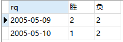
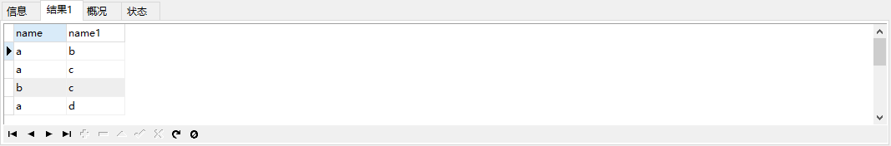
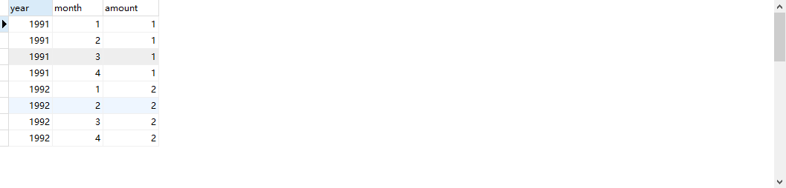
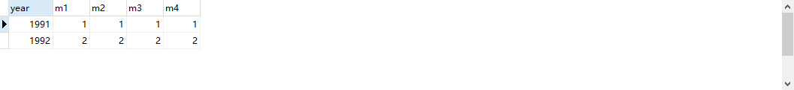
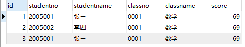
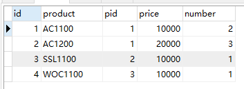
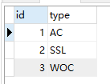
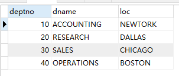
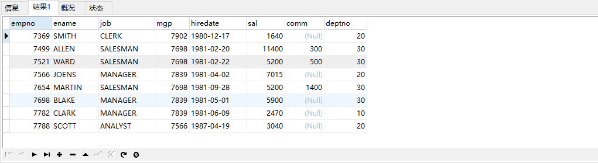

基础语法
.NET和C#有什么区别?
- .NET一般指 .NET FrameWork框架，它是一种平台，一种技术。
- C#是一种编程语言，可以基于.NET平台的应用。
在.net中，配件的意思是？
程序集。（中间语言，源数据，资源，装配清单）
C#中 property 与 attribute的区别，他们各有什么用处，这种机制的好处在哪里？
一个是属性，用于存取类的字段，一个是特性，用来标识类，方法等的附加性质。
什么是扩展方法？
一句话解释，扩展方法使你能够向现有类型“添加”方法，无需修改类型
条件：按扩展方法必须满足的条件：
- 必须要静态类中的静态方法
- 第一个参数的类型是要扩展的类型，并且需要添加this关键字以标识其为扩展方法
建议：通常，只在不得已的情况下才实现扩展方法，并谨慎的实现
使用：不能通过类名调用，直接使用类型来调用
C#中的委托是什么？
一句话解释就是：将方法当作参数传入另一个方法的参数。 .net中有很多常见的委托如：Func 、Action
作用：提高方法的扩展性
用最有效的方法算出2乘以8等于几？
位运算是最快，使用的是位运算 逻辑左位移<<。 方法是2<<3相当于0000 0000 0000 0010 （2的16位int二进制）左移三位就是 0000 0000 0001 0000（16的二进制）
现有一个整数number，请写一个方法判断这个整数是否是2的N次方
4（100）、5（101）、8（1000）、16（10000）
- 取模运算： 用number%2==0可以判断，但是这个有点低级
- 位运算：（使用位运算逻辑并，两个位上的都为1才是1，其余都是0，判断是否等于0） 4&3相当于100&011 ，结果是000等于0，所以4是2的n次方 5&4相当于101&100，结果是100不等于0，所以5不是2的n次方
如果要问如果是2的N次方，这个N是多少？这该怎么算？
private static byte get(int n)
{
byte number = 1;
while (n/2!=1)
{
n = n / 2;
number += 1;
}
return number;
}
CTS、CLS、CLR分别作何解释
CTS：通用语言系统。CLS：通用语言规范。CLR：公共语言运行库。
CTS：Common Type System 通用类型系统。Int32、Int16→int、String→string、Boolean→bool。 每种语言都定义了自己的类型，.Net通过CTS提供了公共的类型，然后翻译生成对应的.Net类型。
CLS：Common Language Specification 通用语言规范。不同语言语法的不同。每种语言都有自己的 语法，.Net通过CLS提供了公共的语法，然后不同语言翻译生成对应的.Net语法。
CLR：Common Language Runtime 公共语言运行时，就是GC、JIT等这些。有不同的CLR，比如服务 器CLR、Linux CLR（Mono）、Silverlight CLR(CoreCLR)。相当于一个发动机，负责执行IL。
在.net中，配件的意思是？
程序集。（中间语言，源数据，资源，装配清单）
c#可否对内存直接操作
C#在unsafe 模式下可以使用指针对内存进行操作, 但在托管模式下不可以使用指针，C#NET默认不运行带指针的，需要设置下，选择项目右键->属性->选择生成->“允许不安全代码”打勾->保存
什么是强类型，什么是弱类型？哪种更好些？为什么?
强类型是在编译的时候就确定类型的数据，在执行时类型不能更改，而弱类型在执行的时候才会确定类型。没有好不好，二者各有好处，强类型安全，因为它事先已经确定好了，而且效率高。
一般用于编译型编程语言，如c++,java,c#,pascal等,弱类型相比而言不安全，在运行的时候容易出现错误，但它灵活，多用于解释型编程语言，如javascript,vb,php等
using关键字的作用
- 引用命名空间，也可using 别名
- 释放资源，实现了IDisposiable的类在using中创建，using结束后会自定调用该对象的Dispose方法，释放资源。
a.Equals(b)和a==b一样吗？
不一样，a==b仅仅表示a和b值相等，a.Equals(b)表示a与b一致
代码求值
class Class1
{
internal static int count = 0;
static Class1()
{
count++;
}
public Class1()
{
count++;
}
}
Class1 o1 = new Class1();
Class1 o2 = new Class1();
o1.count的值是多少？
答案：3，静态 构造方法计算一次，两个实例化对象计算两次。
关于构造函数说法正确的是哪个？
- a)构造函数可以声明返回类型。
- b)构造函数不可以用private修饰
- c)构造函数必须与类名相同
- d)构造函数不能带参数
答案：c ，构造函数必须与类名相同，可以传递多个传递，作用就是便于初始化对象成员，不能有任何 返回类型
Math.Round(11.5)等於多少? Math.Round(-11.5)等於多少?
Math.Round(11.5)=12
Math.Round(-11.5)=-12
&和&&的区别
相同点
&和&&都可作逻辑与的运算符，表示逻辑与（and），当运算符两边的表达式的结果都为true时，其结果才为true，否则，只要有一方为false，则结果为false。（ps：当要用到逻辑与的时候&是毫无意义，&本身就不是干这个的）
不同点
if(loginUser!=null & &string.IsnullOrEmpty(loginUser.UserName))
&&具有短路的功能，即如果第一个表达式为false，则不再计算第二个表达式，对于上面的表达式，当loginUser为null时，后面的表达式不会执行，所以不会出现NullPointerException如果将&&改为&，则会抛出NullPointerException异常。（ps：所以说当要用到逻辑与的时候&是毫无意义的）
& 是用作位运算的。
总结
&是位运算，返回结果是int类型 &&是逻辑运算，返回结果是bool类型
i和i有什么区别？
- i++是先赋值，然后再自增；++i是先自增，后赋值。
- i=0，i++=0，++i=1； Console.WriteLine(i==i); 结果位true
什么是协变和逆变?
可变性是以一种类型安全的方式，将一个对象作为另一个对象来使用。其对应的术语则是不变性（invariant）。
可变性：可变性是以一种类型安全的方式，将一个对象作为另一个对象来使用。例如对普通继承中的可变性：若某方法声明返回类型为Stream，在实现时可以返回一个MemoryStream。可变性有两种类型：协变和逆变。
-
协变性：可以建立一个较为一般类型的变量，然后为其赋值，值是一个较为特殊类型的变量。例如：
string str = "test"; // An object of a more derived type is assigned to an object of a less deri ved type. object obj = str;因为string肯定是一个object，所以这样的变化非常正常。
-
逆变性：在上面的例子中，我们无法将str和一个新的object对象画等号。如果强行要实现的话，只能这么干：
string s = (string) new object();但这样还是会在运行时出错。这也告诉我们，逆变性是很不正常的。
泛型的协变与逆变:
协变性和out关键字搭配使用，用于向调用者返回某项操作的值。例如下面的接口仅有一个方法，就是生产一个T类型的实例。那么我们可以传入一个特定类型。如我们可以将IFactory视为IFactory。这也适用于Food的所有子类型。（即将其视为一个更一般类型的实现）
interface IFactory<T>
{
T CreateInstance();
}
逆变性则相反，和in关键字搭配使用，指的是API将会消费值，而不是生产值。此时一般类型出现在参数中：
interface IPrint<T>
{
void Print(T value);
}
这意味着如果我们实现了IPrint< Code >，我们就可以将其当做IPrint< CsharpCode >使用。（即将其视为一个更具体类型的实现）
如果存在双向的传递，则什么也不会发生。这种类型是不变体(invariant)。
interface IStorage<T>
{
byte[] Serialize(T value);
T Deserialize(byte[] data);
}
这个接口是不变体。我们不能将它视为一个更具体或更一般类型的实现。
假设有如下继承关系People –> Teacher，People –> Student。
如果我们以协变的方式使用（假设你建立了一个IStorage< Teacher >的实例，并将其视为IStorage）则我们可能会在调用Serialize时产生异常，因为Serialize方法不支持协变（如果参数是People的其他子类，例如Student，则IStorage< Teacher >将无法序列化Student）。
如果我们以逆变的方式使用（假设你建立了一个IStorage的实例，并将其视为IStorage< Teacher >），则我们可能会在调用Deserialize时产生异常，因为Deserialize方法不支持逆变，它只能返回People不能返回Teacher。
Server.UrlEncode、HttpUtility.UrlDecode的区别
Server.UrlEncode的编码方式是按照本地程序设置的编码方式进行编码的，而HttpUtility.UrlEncode是默认的按照.net的utf-8格式进行编码的。
关键字
new关键字的作用?
- 运算符：创建对象实例
- 修饰符：在派生类定义一个重名的方法，隐藏掉基类方法
- 约束：泛型约束定义，约束可使用的泛型类型,如：
public class ItemFactory<T> where T : IComparable, new()
{
}
const和readonly有什么区别？
都可以标识一个常量。主要有以下区别：
- 初始化位置不同。const必须在声明的同时赋值；readonly即可以在声明处赋值，也可以在静态构造方法（必须是静态构造方法，普通构造方法不行）里赋值。
- 修饰对象不同。const即可以修饰类的字段，也可以修饰局部变量；readonly只能修饰类的字段
- const是编译时常量，在编译时确定该值；readonly是运行时常量，在运行时确定该值。
- const默认是静态的；而readonly如果设置成静态需要显示声明
- 修饰引用类型时不同，const只能修饰string或值为null的其他引用类型；readonly可以是任何类型。
静态成员和非静态成员的区别
- 静态成员用 static 修饰符声明，在类被实例化时创建，通过类进行访问
- 不带 static 的变量时非静态变量，在对象被实例化时创建，通过对象进行访问，
- 静态方法里不能使用非静态成员，非静态方法可以使用静态成员
- 静态成员属于类，而不属于对象
ref和out有什么区别
- 都是按引用类型进行传递
- 属性不是变量不能作为out、ref参数传递
- ref参数必须初始化。out不需要初始化
- 作用，当方法有多个返回值时，out非常有用
说明C#中的方法声明参数关键字params，ref，out的意义及用法?
- params 关键字，官方给出的解释为用于方法参数长度不定的情况。有时候不能确定一个方法的方法参数到底有多少个，可以使用params关键字来解决问题
- ref 关键字：使用引用类型参数，在方法中对参数所做的任何更改都将反应在该变量中
- out 关键字：out 与ref相似但是out 无需进行初始化。
as和is的区别
as在转换的同时判断兼容性，如果无法进行转换，返回位null（没有产生新的对象），as转换是否成功判断的依据是是否位null is只是做类型兼容性判断，并不执行真正的类型转换，返回true或false，对象为null也会返回false。
as比is效率更高，as只需要做一次类型兼容检查
字符串
是否可以继承String类?
String类是final类故不可以继承。
不是说字符串是不可变的吗？string s="abc";s="123"不就是变了吗？
String是不可变的在这段代码中，s原先指向一个String对象，内容是 "abc"，然后我们将s指向"123"，那么s所指向的那个对象是否发生了改变呢？答案是没有。这时，s不指向原来那个对象了，而指向了另一个 String对象，内容为"123"，原来那个对象还存在于内存之中，只是s这个引用变量不再指向它了。
字符串中string str=null和string str=""和string str=string.Empty的区别？
string.Empty相当于“”,Empty是一个静态只读的字段。 string str="" ,初始化对象，并分配一个空字符串的内存空间 string str=null,初始化对象，不会分配内存空间
string和StringBuilder的区别,两者性能的比较
都是引用类型，分配再堆上
StringBuilder默认容量是16，可以允许扩充它所封装的字符串中字符的数量.每个StringBuffer对象都有一定的缓冲区容量，当字符串大小没有超过容量时，不会分配新的容量，当字符串大小超过容量时，会自动增加容量。
对于简单的字符串连接操作，在性能上stringbuilder不一定总是优于strin因为stringbulider对象的创建也消耗大量的性能，在字符串连接比较少的情况下，过度滥用stringbuilder会导致性能的浪费而非节约，只有大量无法预知次数的字符串操作才考虑stringbuilder的使用。从最后分析可以看出如果是相对较少的字符串拼接根本看不出太大差别。
Stringbulider的使用，最好制定合适的容量值，否则优于默认值容量不足而频繁的进行内存分配操作，是不妥的实现方法。
参考链接：https://www.cnblogs.com/haofuqi/p/4826262.html
Strings = new String(“xyz”);创建了几个String Object?
两个对象，一个是“xyz”,一个是指向“xyz”的引用对象s。
数据类型
分析以下代码，i=? j=?
stringstrTmp = "abcdefg某某某";
inti= System.Text.Encoding.Default.GetBytes(strTmp).Length;
intj= strTmp.Length;
答：i=13,j=10
分析下面代码，a、b的值是多少？
string strTmp = "a1某某某";
int a = System.Text.Encoding.Default.GetBytes(strTmp).Length;
int b = strTmp.Length;
分析：一个字母、数字占一个byte，一个中文占占两个byte，所以a=8,b=5
byte b = 'a'; byte c = 1; byte d = 'ab'; byte e = '啊'; byte g = 256; 这些变量有些错误是错再哪里?
本题考查的是数据类型能承载数据的大小。
- 1byte =8bit，1个汉字=2个byte，1个英文=1个byte=8bit
- 所以bc是对的，deg是错的。'a'是char类型，a错误
- java byte取值范围是-128~127, 而C#里一个byte是0~255
byte a =255;a+=5;a的值是多少？
byte的取值范围是-2的8次方至2的8次方-1，-256至258，a+=1时，a的值时0，a+=5时，a的值是0， 所以a+=5时，值是4
什么是装箱和拆箱？
装箱就是隐式地将一个值类型转换成引用类型，如：
int i=0;
Syste.Object obj=i;
拆箱就是将引用类型转换成值类型，如：
int i=0;
System.Object obj=i;
int j=(int)obj; //（将obj拆箱）
值类型和引用类型的区别?
值类型变量是直接包含值。将一个值类型变量赋给另一个值类型变量，是复制包含的值，默认值是0。
引用类型变量的赋值只复制对对象的引用，而不复制对象本身，默认值是null
值类型有整形、浮点型、bool、枚举。
引用类型有class、delegate、Object、string
值类型存储在栈中，引用类型存储在堆中
short s1 = 1; s1 = s1 + 1;有什么错? short s1 = 1; s1 += 1;有什么错?
s1+1不能显式转换成short类型，可以修改为s1 =(short)(s1 + 1) 。short s1 = 1; s1 += 1正确
DateTime.Parse(myString); 这行代码有什么问题？
有问题，当myString不能满足时间格式要求的时候，会引发异常，建议使用DateTime.TryParse()
int?和int有什么区别?
- int？为可空类型，默认值可以是null
- int默认值是0
- int?是通过int装箱为引用类型实现
面向对象
什么是构造函数？
- 概念：构造函数的方法名与类型相同、没有返回类型
- 作用：完成对类的对象初始化
创建一个类的新对象时，系统会自动调用该构造函数初始化新对象， 如果没有写定义，那么系统会自动提供一个不带任何参数的public 构造函数
class和struct的区别?
相同点 都可以实现接口
不同点
- class是引用类型，struct是值类型
- class允许继承、被继承，struct不允许，只能继承接口
- class可以初始化变量，struct不可以
- class可以有无参的构造函数，struct不可以，必须是有参的构造函数，而且在有参的构造函数必须初始化所有成员
使用场景
- Class比较适合大的和复杂的数据，表现抽象和多级别的对象层次时。
- Struct适用于作为经常使用的一些数据组合成的新类型，表示诸如点、矩形等主要用来存储数据的轻量级对象时，偏简单值。
- Struct有性能优势，Class有面向对象的扩展优势。
简述一下面向对象的三大特性？
封装、继承、多态。
- 封装：是通过把对象的属性的实现细节隐藏起来，仅对外提供公共的访问方法。
- 继承：是通过子类继承基类、继承抽象类、继承接口实现的。
- 多态：是通过重写基类的override 方法、重写虚方法实现的。 好处是：方便维护、易扩展。 缺点是：比面向过程性能低。
构造函数是否能被重写？
构造器Constructor不能被继承，因此不能重写，但可以被重载
抽象类和接口有什么区别？
相同点：都不能直接实例化
不同点：
- 抽象类用abstract修饰、接口用interface修饰
- 抽象类中的方法可以实现，也可以不实现，有抽象方法的类一定要用abstract修饰，接口中的方法不允许实现
- 抽象类只能单继承，接口支持多实现
- 抽象类有构造方法，接口不能有构造方法
- 接口只负责功能的定义，通过接口来规范类的，（有哪些功能），而抽象类即负责功能的定义有可以实现功能（实现了哪些功能）
类的执行顺序？
执行顺序：父类，子类，静态块，静态字段，非静态块，非静态字段，构造器，方法
接口是否可继承接口？抽象类是否可实现（implements）接口？抽象类是否可继承实现类（concrete class）？
接口可以继承接口，抽象类可以实现接口，抽象类可以继承实现类，但前提是实现类必须有明确的构造函数。
继承最大的好处？
对父类成员进行重用，增加代码的可读性、灵活性。
请说说引用和对象?
对象和引用时分不开的，对象生成一个地址，放在堆里面，引用则指向这个地址，放在栈里面
什么是匿名类，有什么好处？
不用定义、没有名字的类，使用一次便可丢弃。好处是简单、随意、临时的。
重写和重载的区别?
- 重写方法：关键字用override修饰，派生类重写基类的方法，方法命名、返回类型，参数必须相同
- 重载方法：方法名必须相同，参数列表必须不相同，返回类型可以不相同。
- 作用：重写主要是实现面向对象的多态性、重载主要是实现实例化不同的对象
什么时候用重载？什么时候用重写？
当一个类需要用不同的实现来做同一件事情，此时应该用重写，而重载是用不同的输入做同一件事情
C#中有没有静态构造函数，如果有是做什么用的？
特点： 静态构造函数既没有访问修饰符，也没有参数。在创建第一个实例或引用任何静态成员之前，将自动调用静态构造函数来初始化类。无法直接调用静态构造函数。在程序中，用户无法控制何时执行静态构造函数。
用途 : 当类使用日志文件时，将使用这种构造函数向日志文件中写入项。
怎样理解静态变量？静态成员和非静态成员的区别？
静态变量属于类，而不属于对象；并对所有对象所享；静态成员在加类的时候就被加载。
属性能在接口中声明吗？
可以，不能有访问修饰符，不能初始化赋值。
在项目中为什么使用接口？接口的好处是什么？什么是面向接口开发？
接口是一种约束，描述类的公共方法/公共属性，不能有任何的实现
好处是：结构清晰，类之间通信简单易懂，扩展性好，提高复用性。
面向interface编程，原意是指面向抽象协议编程，实现者在实现时要严格按协议来办。
静态方法可以访问非静态变量吗？如果不可以为什么？
静态方法和非静态变量不是同一生命周期，静态方法属于类，非静态变量属于具体的对象，静态方法和具体的对象没有任何关联
在.Net中所有可序列化的类都被标记为_?
[serializable]
C#中 property 与 attribute的区别，他们各有什么用处，这种机制的好处在哪里？
一个是属性，用于存取类的字段，一个是特性，用来标识类，方法等的附加性质
当使用new B()创建B的实例时，产生什么输出？
using System;
class A
{
public A()
{
PrintFields();
}
public virtual void PrintFields(){}
}
class B:A
{
int x=1;
int y;
public B()
{
y=-1;
}
public override void PrintFields()
{
Console.WriteLine("x={0},y={1}",x,y);
}
}
答：X=1,Y=0;
能够将非静态的方法覆写成静态方法吗？
答：不能，覆写方法的签名必须与被覆写方法的签名保持一致，除了将virtual改为override。
集合
IList 接口与List的区别是什么?
IList 泛型接口是 Icollection 接口的子代，并且是所有非泛型列表的基接口。 Ilist 实现有三种类别：只读、固定大小、可变大小。 无法修改只读 Ilist。 固定大小的 Ilist 不允许添加或移除元素，但允许修改现有元素。 可变大小的 Ilist 允许添加、移除和修改元素。
IList 是个接口，定义了一些操作方法这些方法要你自己去实现，当你只想使用接口的方法时，这种方式比较好。他不获取实现这个接口的类的其他方法和字段，有效的节省空间。
List 是个类型 已经实现了IList 定义的那些方法。
List List1 = new List ();
是想创建一个List，而且需要使用到List的功能，进行相关操作。
IList IList1 = new List ();
而只是想创建一个基于接口IList的对象的实例，只是这个接口是由List实现的。所以它只是希望使用到IList接口规定的功能而已。
如何把一个array复制到arrayList里?
foreach( object arr in array)
{
arrayist.Add(arr);
}
List, Set, Map是否继承自Collection接口?
List，Set是，Map不是
Set里的元素是不能重复的，那么用什么方法来区分重复与否呢? 是用==还是equals()? 它们有何区别?
Set里的元素是不能重复的，那么用iterator()方法来区分重复与否。equals()是判读两个Set是否相等。
equals()和==方法决定引用值是否指向同一对像，equals()在类中被覆盖，为的是当两个分离的对象的内容和类型相配的话，返回真值。
有50万个int类型的数字，现在需要判断一下里面是否存在重复的数字，请你简要说一下思路。
- 使用C#的List集合自带的去重方法，例如 Distinct()，GroupBy()等
- 利用 Dictionary 的Key值唯一的特性，HashSet 元素值唯一的特性 进行判断
数组有没有length()这个方法? String有没有length()这个方法？
数组没有length()这个方法，有length的属性。String有有length()这个方法。
一个整数List中取出最大数（找最大值）。不能用Max方法。
private static int GetMax(List<int> list)
{
int max = list[0];
for (int i = 0; i < list.Count; i++)
{
if (list[i]>max)
{
max = list[i];
}
}
return max;
}
利用IEnumerable实现斐波那契数列生成?
IEnumerable<int> GenerateFibonacci(int n)
{
if (n >= 1) yield return 1;
int a = 1, b = 0;
for (int i = 2; i <= n; ++i)
{
int t = b;
b = a;
a += t;
yield return a;
}
}
请利用 foreach 和 ref 为一个数组中的每个元素加 1
注意 foreach 不能用 var ，也不能直接用 int ，需要 ref int ，注意 arr 要转换为 Span 。
int[] arr = { 1, 2, 3, 4, 5};
Console.WriteLine(string.Join(",", arr)); // 1,2,3,4,5
foreach (ref int v in arr.AsSpan())
{
v++;
}
Console.WriteLine(string.Join(",", arr)); // 2,3,4,5,6
能用foreach遍历访问的对象需要实现 接口或声明方法的类型
答：IEnumerable 、 GetEnumerator。
什么是IEnumerable？
IEnumerable及IEnumerable的泛型版本IEnumerable是一个接口，它只含有一个方法GetEnumerator。Enumerable这个静态类型含有很多扩展方法，其扩展的目标是IEnumerable。
实现了这个接口的类可以使用Foreach关键字进行迭代（迭代的意思是对于一个集合，可以逐一取出元素并遍历之）。实现这个接口必须实现方法GetEnumerator。
IEnumerable的缺点有哪些？
IEnumerable功能有限，不能插入和删除。
访问IEnumerable只能通过迭代，不能使用索引器。迭代显然是非线程安全的，每次IEnumerable都会生成新的IEnumerator，从而形成多个互相不影响的迭代过程。
在迭代时，只能前进不能后退。新的迭代不会记得之前迭代后值的任何变化。
延迟执行 (Lazy Loading)是什么？
大部分LINQ语句是在最终结果的第一个元素被访问的时候（即在foreach中调用MoveNext方法）才真正开始运算的，这个特点称为延迟执行。一般来说，返回另外一个序列（通常为IEnumerable或IQueryable）的操作，使用延迟执行，而返回单一值的运算，使用立即执行。
IEnumerable是延迟执行的，当没有触发执行时，就不会进行任何运算。Select方法不会触发LINQ的执行。一些触发的方式是：foreach循环，ToList，ToArray，ToDictionary方法等
LINQ可视化工具简单介绍一下？
LINQPad工具是一个很好的LINQ查询可视化工具。它由Threading in C#和C# in a Nutshell的作者Albahari编写，完全免费。它的下载地址是http://www.linqpad.net/
进入界面后，LINQPad可以连接到已经存在的数据库（不过就仅限微软的SQL Server系，如果要连接到其他类型的数据库则需要安装插件）。某种程度上可以代替SQL Management Studio，是使用SQL Management Studio作为数据库管理软件的码农的强力工具，可以用于调试和性能优化（通过改善编译后的SQL规模）。
LINQPad支持使用SQL或C#语句（点标记或查询表达式）进行查询。你也可以通过点击橙色圈内的各种不同格式，看到查询表达式的各种不同表达方式：
- Lambda：查询表达式的Lambda表达式版本，
- SQL：由编译器转化成的SQL，通常这是我们最关心的部分，
- IL：IL语言
LINQ to Object和LINQ to SQL有何区别？
LINQ to SQL可以将查询表达式转换为SQL语句，然后在数据库中执行。相比LINQ to Object，则是将查询表达式直接转化为Enumerable的一系列方法，最终在C#内部执行。LINQ to Object的数据源总是实现IEnumerable（所以不如叫做LINQ to IEnumerable），相对的，LINQ to SQL的数据源总是实现IQueryable并使用Queryable的扩展方法。
将查询表达式转换为SQL语句并不保证一定可以成功。
Collection和Collections的区别？
Collection 是集合类的上级接口，Collections 是针对集合类的一个帮助类，它提供一系列静态方法来实现对各种集合的搜索，排序，线程安全化操作。
能用foreach 遍历访问的对象的要求？
需要实现IEnumerable接口或声明GetEnumerator方法的类型。
说出五个集合类？
- List：泛型类；
- Stack：堆栈，后进先出的访问各个元素
- Dictionary<TKey, TValue>：字典类，key是区分大小写；value用于存储对应于key的值
- HashSet：此集合类中不能有重复的子元素
- SortedList<TKey, TValue>：排序列表，key是排好序的数组。
HashMap和Hashtable区别？
在.Net 模仿 java 的过程中抛弃了 HashMap ，所以以后再去面试.Net的时候当别人问你 HashTable 和 HashMap 的区别的时候，请告诉他，C#.Net 中 没有HashMap，与其相似的是 Dictionary。
| 特性 | Hashtable (非泛型) | Dictionary<TKey, TValue> (泛型) |
|---|---|---|
| 命名空间 | System.Collections (旧版) | System.Collections.Generic (现代) |
| 基类/接口 | 实现 IDictionary 接口 | 实现 IDictionary<TKey, TValue> 泛型接口 |
| 类型安全 | 存储 object，需装箱拆箱 | 泛型，无需类型转换 |
| 线程安全 | 是（方法级同步锁） | 否（需手动同步或使用 ConcurrentDictionary） |
| 性能 | 较低（因装箱拆箱） | 更高（无装箱拆箱） |
单线程程序中推荐使用 Dictionary, 有泛型优势, 且读取速度较快, 容量利用更充分。多线程程序中推荐使用 Hashtable, 默认的 Hashtable 允许单线程写入, 多线程读取, 对 Hashtable 进一步调用 Synchronized() 方法可以获得完全线程安全的类型. 而 Dictionary 非线程安全, 必须人为使用 lock 语句进行保护, 效率大减。
简述一下 Dictionary泛型的实现，以及如何避免碰撞？
实现方式
- 底层数据结构
- 哈希桶（Buckets）数组：存储索引，指向条目（Entries）数组中的位置。
- 条目（Entries）数组：存储实际的键值对，结构为 {hashCode, key, value, next}。
- next 字段用于处理碰撞（链地址法）。
- 关键机制
- 哈希函数：对键调用 GetHashCode() 计算哈希值，再通过取模运算确定桶位置。
- 扩容策略：当元素数量超过 容量 × 负载因子（默认 0.75）时，容量翻倍并重新哈希。
- 操作复杂度
- 插入/查找/删除：平均 O(1)（理想情况下），最坏 O(n)（全碰撞时）。
解决碰撞冲突
-
链地址法（Separate Chaining）
-
实现方式： 每个哈希桶指向一个链表（实际用
Entries数组 +next索引模拟链表）。 碰撞时，新条目被添加到链表头部（next指向原桶中的条目）。 -
示例：
// 假设哈希冲突：keyA 和 keyB 的哈希值均映射到桶 2 entries[0] = {hashA, keyA, valueA, -1} // 桶 2 指向索引 0 entries[1] = {hashB, keyB, valueB, 0} // next=0，链接到前一个条目
-
-
优化措施
- 快速模运算：用
hashCode & (buckets.Length - 1)替代取模（要求容量为 2 的幂）。 - 素数容量：初始容量为素数（如 3, 7, 11），减少哈希聚集（.NET Core 后改用 2 的幂容量）。
- 自动扩容：减少碰撞概率。
- 快速模运算：用
数组、链表、哈希、队列、栈数据结构特点，各自优点和缺点？
数组(Array)： 优点：查询快，通过索引直接查找；有序添加，添加速度快，允许重复； 缺点：在中间部位添加、删除比较复杂，大小固定，只能存储一种类型的数据； 如果应用需要快速访问数据，很少插入和删除元素，就应该用数组。
链表(LinkedList)： 优点：有序添加、增删改速度快，对于链表数据结构，增加和删除只要修改元素中的指针就可以了； 缺点：查询慢，如果要访问链表中一个元素，就需要从第一个元素开始查找； 如果应用需要经常插入和删除元素，就应该用链表。
栈(Stack)： 优点：提供后进先出的存储方式，添加速度快，允许重复； 缺点：只能在一头操作数据，存取其他项很慢；
队列(Queue)： 优点：提供先进先出的存储方式，添加速度快，允许重复； 缺点：只能在一头添加，另一头获取，存取其他项很慢；
哈希(Hash)： 特点：散列表，不允许重复； 优点：如果关键字已知则存取速度极快； 缺点：如果不知道关键字则存取很慢，对存储空间使用不充分；
泛型
泛型的主要约束和次要约束是什么？
当一个泛型参数没有任何约束时，它可以进行的操作和运算是非常有限的，因为不能对实参进行任何类型上的保证，这时候就需要用到泛型约束。
泛型的约束分为：主要约束和次要约束，它们都使实参必须满足一定的规范，C#编译器在编译的过程中可以根据约束来检查所有泛型类型的实参并确保其满足约束条件。
（1）主要约束
一个泛型参数至多拥有一个主要约束，主要约束可以是一个引用类型、class或者struct。如果指定一个引用类型（class），那么实参必须是该类型或者该类型的派生类型。相反，struct则规定了实参必须是一个值类型。下面的代码展示了泛型参数主要约束：
public class ClassT1<T> where T : Exception
{
private T myException;
public ClassT1(T t)
{
myException = t;
}
public override string ToString()
{
// 主要约束保证了myException拥有source成员
return myException.Source;
}
}
public class ClassT2<T> where T : class
{
private T myT;
public void Clear()
{
// T是引用类型，可以置null
myT = null;
}
}
public class ClassT3<T> where T : struct
{
private T myT;
public override string ToString()
{
// T是值类型，不会发生NullReferenceException异常
return myT.ToString();
}
}
(2)次要约束
次要约束主要是指实参实现的接口的限定。对于一个泛型，可以有0到无限的次要约束，次要约束规定了实参必须实现所有的次要约束中规定的接口。次要约束与主要约束的语法基本一致，区别仅在于提供的不是一个引用类型而是一个或多个接口。例如我们为上面代码中的ClassT3增加一个次要约束：
public class ClassT3<T> where T : struct, IComparable
{
......
}
泛型的优点有哪些？
代码的可重用性。无需从基类型继承，无需重写成员。
扩展性好。
类型安全性提高。 泛型将类型安全的负担从你那里转移到编译器。 没有必要编写代码来测试正确的数据类型，因为它会在编译时强制执行。 降低了强制类型转换的必要性和运行时错误的可能性。
性能提高。泛型集合类型通常能更好地存储和操作值类型，因为无需对值类型进行装箱。
泛型有哪些常见的约束？
泛型约束 public void GetEntity() where T:class
where T :struct //约束T必须为值类型
where K : class //约束K必须为引用类型
where V : IComparable //约束V必须是实现了IComparable接口
where W : K //要求W必须是K类型，或者K类型的子类
where X :class ,new () // 或者写出 new class() ； X必须是引用类型，并且要有一个无参的构造函数（对于一个类型有多有约束，中间用逗号隔开）
异常
C#异常类有哪些信息？
C#中，所有异常都继承自System.Exception类，Exception类定义了C#异常应该具有的信息和方法。值得注意的属性有：
public virtual string Message { get; }// 错误的信息，文字描述
public virtual string StackTrace { get; }// 发生异常的调用堆栈信息
public System.Reflection.MethodBase TargetSite { get; }//引发这个错误的方法
public Exception InnerException { get; }// 子异常
如何创建一个自定义异常?
根据类继承原则和异常处理原则，我们可以使用以下方式来自定义一个类：
public class CustomException : Exception
{
}
如何针对不同的异常进行捕捉？
public class Program
{
public static void Main(string[] args)
{
Program p = new Program();
p.RiskWork();
Console.ReadKey();
}
public void RiskWork()
{
try
{
// 一些可能会出现异常的代码
}
catch (NullReferenceException ex)
{
HandleExpectedException(ex);
}
catch (ArgumentException ex)
{
HandleExpectedException(ex);
}
catch (FileNotFoundException ex)
{
HandlerError(ex);
}
catch (Exception ex)
{
HandleCrash(ex);
}
}
// 这里处理预计可能会发生的，不属于错误范畴的异常
private void HandleExpectedException(Exception ex)
{
// 这里可以借助log4net写入日志
Console.WriteLine(ex.Message);
}
// 这里处理在系统出错时可能会发生的，比较严重的异常
private void HandlerError(Exception ex)
{
// 这里可以借助log4net写入日志
Console.WriteLine(ex.Message);
// 严重的异常需要抛到上层处理
throw ex;
}
// 这里处理可能会导致系统崩溃时的异常
private void HandleCrash(Exception ex)
{
// 这里可以借助log4net写入日志
Console.WriteLine(ex.Message);
// 关闭当前程序
System.Threading.Thread.CurrentThread.Abort();
}
}
如何避免类型转换时的异常？
其中有些是确定可以转换的（比如将一个子类类型转为父类类型），而有些则是尝试性的（比如将基类引用的对象转换成子类）。当执行常识性转换时，我们就应该做好捕捉异常的准备。
当一个不正确的类型转换发生时，会产生InvalidCastException异常，有时我们会用try-catch块做一些尝试性的类型转换，这样的代码没有任何错误，但是性能却相当糟糕，为什么呢？异常是一种耗费资源的机制，每当异常被抛出时，异常堆栈将会被建立，异常信息将被加载，而通常这些工作的成本相对较高，并且在尝试性类型转换时，这些信息都没有意义。
在.NET中提供了另外一种语法来进行尝试性的类型转换，那就是关键字 is 和 as 所做的工作。
（1）is 只负责检查类型的兼容性，并返回结果：true 和 false。→ 进行类型判断
public static void Main(string[] args)
{
object o = new object();
// 执行类型兼容性检查
if(o is ISample)
{
// 执行类型转换
ISample sample = (ISample)o;
sample.SampleShow();
}
Console.ReadKey();
}
（2）as 不仅负责检查兼容性还会进行类型转换，并返回结果，如果不兼容则返回 null 。→ 用于类型转型
public static void Main(string[] args)
{
object o = new object();
// 执行类型兼容性检查
ISample sample = o as ISample;
if(sample != null)
{
sample.SampleShow();
}
Console.ReadKey();
}
两者的共同之处都在于：不会抛出异常！综上比较，as 较 is 在执行效率上会好一些，在实际开发中应该量才而用，在只进行类型判断的应用场景时，应该多使用 is 而不是 as。
try {}里有一个return语句，那么紧跟在这个try后的finally {}里的code会不会被执行，什么时候被执行，在return前还是后?
会执行，在return前执行。
C# 中的异常类有哪些？
C# 异常是使用类来表示的，异常类主要是直接或间接地派生于 System.Exception 类。
- System.ApplicationException 和 System.SystemException 类是派生于 System.Exception 类的异常类。
- System.ApplicationException 类支持由应用程序生成的异常，所以我们自己定义的异常都应派生自该类。
- System.SystemException 类是所有预定义的系统异常的基类。
- System.IO.IOException 用于处理 I/O 错误(读写文件)。
- System.IndexOutOfRangeException 用于处理当方法指向超出范围的数组索引时生成的错误。
- System.ArrayTypeMismatchException 用于处理当数组类型不匹配时生成的错误。
- System.NullReferenceException 用于处理当依从一个空对象时生成的错误。
- System.DivideByZeroException 用于处理当除以零时生成的错误。例如：100/0就会报这个错误。
- System.InvalidCastException 用于处理在类型转换期间生成的错误。
- System.OutOfMemoryException 用于处理空闲内存不足生成的错误。
- System.StackOverflowException 用于处理栈溢出生成的错误。
内存管理
C#可否对内存进行直接的操作？
C#在Unsafe 模式下可以使用指针对内存进行操作, 但在托管模式下不可以使用指针。
-
在 Visual Studio 开发环境中设置/unsafe（启用不安全模式)编译器选项 打开项目的“属性”页。 单击“生成”属性页。 选中“允许不安全代码”复选框。
-
unsafe关键字表示不安全上下文，该上下文是任何涉及指针的操作所必需的。 可以在类型或成员的声明中使用 unsafe修饰符。 因此，类型或成员的整个正文范围均被视为不安全上下文。例如，以下是用 unsafe 修饰符声明的方法：
unsafe static void FastCopy(byte[] src, byte[] dst, int count) { // Unsafe context: can use pointers here. }不安全上下文的范围从参数列表扩展到方法的结尾，因此指针在以下参数列表中也可以使用：
unsafe static void FastCopy ( byte* ps, byte* pd, int count ) {...}还可以使用不安全块从而能够使用该块内的不安全代码。例如：
unsafe { // Unsafe context: can use pointers here. }若要编译不安全代码，必须指定 /unsafe编译器选项。 无法通过公共语言运行库验证不安全代码。
using() 语法有用吗？什么是IDisposable？
有用，实现了IDisposiable的类在using中创建，using结束后会自定调用该对象的Dispose方法，释放资源。
using 语句会被编译成什么代码？
// 编译前
using (var resource = new FileStream(...)) { ... }
// 编译后（等价于）
FileStream resource = null;
try {
resource = new FileStream(...);
...
} finally {
resource?.Dispose();
}
CTS、CLS、CLR分别作何解释？
CTS：通用语言系统。CLS：通用语言规范。CLR：公共语言运行库。
什么是受管制的代码？
unsafe：非托管代码。不经过CLR运行。
什么是托管代码、非托管代码托管代码 (managed code)
由公共语言运行库环境（而不是直接由操作系统）执行的代码。托管代码应用程序可以获得公共语言运行库服务，例如自动垃圾回收、运行库类型检查和安全支持等。这些服务帮助提供独立于平台和语言的、统一的托管代码应用程序行为。
非托管代码 (unmanaged code)
在公共语言运行库环境的外部，由操作系统直接执行的代码。非托管代码必须提供自己的垃圾回收、类型检查、安全支持等服务；它与托管代码不同，后者从公共语言运行库中获得这些服务。
GC是什么? 为什么要有GC?
- GC是垃圾收集器。程序员不用担心内存管理，因为垃圾收集器会自动进行管理.
- .NET的GC机制有这样两个问题：首先，GC并不是能释放所有的资源。它不能自动释放非托管资源。
GC并不是实时性的，这将会造成系统性能上的瓶颈和不确定性。
GC就是对“不可达“的对象进行回收，释放内存。
委托与事件
委托是什么？
委托是寻址的.NET版本。在C++中，函数指针只不过是一个指向内存位置的指针，它不是类型安全的。我们无法判断这个指针实际指向什么，像参数和返回类型等项久更无从知晓了。
而.NET委托完全不同，委托是类型安全的类，它定义了返回类型和参数的类型。委托类不仅包含对方法的引用，也可以包含对多个方法的引用。
如何自定义委托？
声明一个委托类型，它的实例引用一个方法，该方法获取一个int参数，返回void。
public delegate void Feedback(int num);
理解委托的一个要点是它们的安全性非常高。在定义委托时，必须给出它所表示的方法的签名和返回类型等全部细节。
理解委托的一种比较好的方式是把委托当作这样一件事情：它给方法的签名和返回类型指定名称。其语法类似于方法的定义，需要在定义方法的前面加上delegate关键字。
定义委托基本上就是定义一个新的类，所以可以在任何地方定义类的相同地方定义委托，也就是说，可以在另一个类的内部定义，也可以在任何类的外部定义，还可以在名称控件中把委托定义为定义为顶层对象。访问修饰符可以是public/private/protected等。
.NET默认的委托类型有哪几种？
- Action < T > 泛型Action委托表示引用一个void返回类型的方法。这个委托类存在16种重载方法。 例如Action<in T1,In T2>调用没有参数的方法
- Func< T > Func调用带返回类型的方法。有16种重载方法。 例如Func委托类型可以调用带返回类型且无参数的方法，Func<in T,out TResult>委托类型调用带有4个参数和一个返回类型的方法。
简述Func与Action的区别？
Func是有返回值的委托，Action是没有返回值的委托。
什么是泛型委托？
Action就是泛型委托。
注意事项：
-
建议尽量使用这些委托类型，而不是在代码中定义更多的委托类型。这样可以减少系统中的类型数目，同时简化编码
-
如果需要使用ref或out关键字，以传引用的方式传递一个参数，就可能不得不定义自己的委托：
delegate void Test(ref int i) -
如果委托要通过C#的params关键字获取可变数量的额参数，要为委托的任何桉树指定默认值，或者要对委托的泛型类型参数进行约束，也必须定义自己的委托类型
delegate void EventHandler(Object sender, TEventArgs e) where TEventArgs : EventArgs; -
使用获取泛型实参和返回值的委托时，可利用逆变与协变。逆变：父类转换为子类；协变：子类转换为父类
什么是匿名方法?
匿名方法是用作委托的参数的一段代码。
//匿名方法,例1
Func<int, int> anon = delegate(int i)
{
i = i+1;
return i;
};
//输出2
Console.WriteLine(anon(1));
//匿名方法,例2
Action<int> anon2 = delegate(int i)
{
i = i + 1;
};
//输出2
Console.WriteLine(anon(1));
什么是闭包？
通过Lambda表达式可以访问Lambda表达式块外部的变量，这成为闭包。
当引用外部变量时，需要注意，外部变量变化时，lambda表达式的结果也可能会随着外部变量变化而变化。
如下面的例子：
int y = 5;
Func<int, int> lambda = x => x + y;
Console.WriteLine(lambda(1));
y = 10;
Console.WriteLine(lambda(1));
网路与通信
Serializable特性有什么作用？
通过上面的流类型可以方便地操作各种字节流，但是如何把现有的实例对象转换为方便传输的字节流，就需要使用序列化技术。对象实例的序列化，是指将实例对象转换为可方便存储、传输和交互的流。
在.NET中，通过Serializable特性提供了序列化对象实例的机制，当一个类型被申明为Serializable后，它就能被诸如BinaryFormatter等实现了IFormatter接口的类型进行序列化和反序列化。
.netRemoting 的工作原理是什么？
服务器端向客户端发送一个进程编号，一个程序域编号，以确定对象的位置
什么是XML？
XML即可扩展标记语言。eXtensible Markup Language.标记是指计算机所能 理解的信息符号，通过此种标记，计算机之间可以处理包含各种信息的文章等。如何定义这些标记，即可以选择国际通用的标记语言，比如HTML，也可以使用象XML这样由相关人士自由决定的标记语言，这就是语言的可扩展性。XML是从SGML中简化修改出来的。它主要用到的有XML、XSL和XPath等。
什么是WebService？UDDI？
Web Service便是基于网络的、分布式的模块化组件，它执行特定的任务，遵守具体的技术规范，这些规范使得Web Service能与其他兼容的组件进行互操作。UDDI的目的是为电子商务建立标准；UDDI是一套基于Web的、分布式的、为WebService提供的、信息注册中心的实现标准规范，同时也包含一组使企业能将自身提供的Web Service注册，以使别的企业能够发现的访问协议的实现标准。
列举一下你所了解的XML技术及其应用
xml用于配置,用于保存静态数据类型.接触XML最多的是web Services..和config
什么是SOAP,有哪些应用？
simple object access protocal,简单对象接受协议.以xml为基本编码结构,建立在已有通信协议上(如http,不过据说ms在搞最底层的架构在tcp/ip上的soap)的一种规范WebService使用的协议。
XML与 HTML 的主要区别？
- XML是区分大小写字母的，HTML不区分。
- 在HTML中，如果上下文清楚地显示出段落或者列表键在何处结尾
- 在XML中，拥有单个标记而没有匹配的结束标记的元素必须用一个 / 字符作为结尾。这样分析器就知道不用查找结束标记了。
- 在XML中，属性值必须分装在引号中。在HTML中，引号是可用可不用的。
- 在HTML中，可以拥有不带值的属性名。在XML中，所有的属性都必须带有相应的值。
post、get的区别?
- get的参数会显示在浏览器地址栏中，而post的参数不会显示在浏览器地址栏中；
- 使用post提交的页面在点击【刷新】按钮的时候浏览器一般会提示“是否重新提交”，而get则不会；
- 使用get的页面可以被搜索引擎抓取，而用post的则不可以；
- 使用post可以提交的数据量非常大，而用get可以提交的数据量则非常小(2k)，受限于网页地址的长度。
- 使用post可以进行文件的提交，而用get则不可以。
http 响应码 301 和 302 代表的是什么？有什么区别？
301：永久重定向；302：暂时重定向。
它们的区别是，301 对搜索引擎优化（SEO）更加有利；302 有被提示为网络拦截的风险。
什么是 XSS 攻击，如何避免？
XSS 攻击：即跨站脚本攻击，它是 Web 程序中常见的漏洞。原理是攻击者往 Web 页面里插入恶意的脚本代码（css 代码、Javascript 代码等），当用户浏览该页面时，嵌入其中的脚本代码会被执行，从而达到恶意攻击用户的目的，如盗取用户 cookie、破坏页面结构、重定向到其他网站等。 预防 XSS 的核心是必须对输入的数据做过滤处理。
HTTP fetch发送2次请求的原因？
fetch发送post请求的时候，总是发送2次，第一次状态码是204，第二次才成功？
原因很简单，因为你用fetch的post请求的时候，导致fetch 第一次发送了一个Options请求，询问服务器是否支持修改的请求头，如果服务器支持，则在第二次中发送真正的请求。
HTTP常见的的头部有哪些？
可以将http首部分为通用首部，请求首部，响应首部，实体首部
通用首部表示一些通用信息，比如date表示报文创建时间，
请求首部就是请求报文中独有的，如cookie，和缓存相关的如if-Modified-Since
响应首部就是响应报文中独有的，如set-cookie，和重定向相关的location，
实体首部用来描述实体部分，如allow用来描述可执行的请求方法，content-type描述主题类型，content-Encoding描述主体的编码方式
什么是 CSRF 攻击，如何避免？
CSRF：Cross-Site Request Forgery（中文：跨站请求伪造），可以理解为攻击者盗用了你的身份，以你的名义发送恶意请求，比如：以你名义发送邮件、发消息、购买商品，虚拟货币转账等。 防御手段：
验证请求来源地址； 关键操作添加验证码； 在请求地址添加 token 并验证。
HTTP 状态码 304 的含义？什么时候用304？
304：如果客户端发送了一个带条件的GET 请求且该请求已被允许，而文档的内容（自上次访问以来或者根据请求的条件）并没有改变，则服务器应当返回这个304状态码。
AJAX的底层实现原理?
Ajax核心—-----XMLHttpRequest 上面我们大概感受了一下Ajax的过程，我们发现发送异步请求才是核心，事实上它就是XMLHttpRequest，整个Ajax之所以能完成异步请求完全是因为这个对应可以发送异步请求的缘故。
而且我们又发现上面那个事件就是整个处理过程的核心，可以根据不同状态执行不同操作，其实它就是XMLHttpRequest的方法onreadystatechange，它在每次状态发生改变时都会触发。那么是谁取得的返回信息呢？它就是XMLHttpRequest的另一个方法responseText（当然还有responseXML）。
我们还没有说发送给谁以及执行发送操作，这两个就是XMLHttpRequest的open和send方法。其他的当然还有了，我们直接列出来吧：
XMLHttpRequest对象属性
- readyState：请求状态，开始请求时值为0直到请求完成这个值增长到4
- responseText：目前为止接收到的响应体,readyState<3此属性为空字符串，=3为当前响应体，=4则为完整响应体
- responseXML：服务器端相应，解析为xml并作为Document对象返回
- status：服务器端返回的状态码，=200成功，=404表示“Not Found”
- statusText：用名称表示的服务器端返回状态，对于“OK”为200，“Not Found”为400
方法
- setRequestHeader()：向一个打开但是未发生的请求设置头信息
- open()：初始化请求参数但是不发送
- send()：发送Http请求
- abort()：取消当前相应
- getAllResponseHeaders()：把http相应头作为未解析的字符串返回
- getResponseHeader()：返回http相应头的值
对象关系映射
什么是ORM?
ORM指的是面向对象的对象模型和关系型数据库的数据结构之间的互相转换。(表实体跟表之间的相互转换)
ORM框架有很多，EF框架是ORM框架的其中一种，是实现了ORM思想的框架。
O=>表实体、M=>映射关系、R=>数据库.表
如何提高LINQ性能问题？
提升从数据库中拿数据的速度，可以参考以下几种方法：
- 在数据库中的表中定义合适的索引和键
- 只获得你需要的列（使用ViewModel或者改进你的查询）和行（使用IQueryable）
- 尽可能使用一条查询而不是多条
- 只为了展示数据，而不进行后续修改时，可以使用AsNoTracking。它不会影响生成的SQL，但它可以令系统少维护很多数据，从而提高性能
- 使用Reshaper等工具，它可能会在你写出较差的代码时给出提醒
除了EF，列举出你知道的ORM框架？
dapper、EntityFramework、 EJB、Hibernate、IBATIS、TopLink、OJB
Entity Framework
EF(Entity Framework)是什么？
实体框架EF是http://ADO.NET中的一组支持开发面向数据的软件应用程序的技术，是微软的一个ORM框架。
主要有三种方式：
Database FirstDatabase First”模式，我们称之为“数据库优先”，前提是你的应用已经有相应的数据库，你可以使用EF设计工具根据数据库生成数据数据类，你可以使用Visual Studio模型设计器修改这些模型之间对应关系。
Model FirstModel First我们称之为“模型优先”，这里的模型指的是“ADO.NET Entity Framework Data Model”，此时你的应用并没有设计相关数据库，在Visual Studio中我们通过设计对于的数据模型来生成数据库和数据类。
Code FirstCode First模式我们称之为“代码优先”模式，是从EF4.1开始新建加入的功能。使用Code First模式进行EF开发时开发人员只需要编写对应的数据类（其实就是领域模型的实现过程），然后自动生成数据库。这样设计的好处在于我们可以针对概念模型进行所有数据操作而不必关心数据的存储关系，使我们可以更加自然的采用面向对象的方式进行面向数据的应用程序开发。
为什么用EF而不用原生的ADO.NET?
- 极大的提高开发效率:EF是微软自己的产品,开发中代码都是强类型的,写代码效率非常高,自动化程度非常高,命令式的编程.
- EF提供的模型设计器非常强大,不仅仅带来了设计数据库的革命,也附带来的自动化模型代码的功能也极大的提高开发和架构设计的效率.
- EF跨数据支持的是ORM框架主要功能点之一,带来的是可以通过仅仅改变配置就可以做到跨数据库的能力
如何如何获取EF生成的Sql脚本？
- 可以调试起来通过SqlServerProfiler 来获取Sql
- EF Dbcontext 注册日志事件输出日志查看Sql
在哪些类型额项目中你会选择EF? 为什么？
这个要结合EF的特点来说：EF主要是以面向对象的思想来做数据库数据操作，对Sql语句能力没什么要求，开发使用效率高！便于上手，一般来说，使用EF框架，肯定会比直接使用ADO.NET，消耗的时间多一些。 所以在一般企业级开发，管理型系统，对数据性能要求不是特别高的情况下，优先选择EF,这样可以大大的推进开发效率！如果像一些互联网项目中，对性能要求精度很高！可以另外做技术选型，选择原生ADO.NET。
请说明EF中映射实体对象的几种状态？
- Detached：该实体未由上下文跟踪。刚使用新运算符或某个 System.Data.Entity.DbSet Create 方法创建实体后，实体就处于此状态。
- Unchanged：实体将由上下文跟踪并存在于数据库中，其属性值与数据库中的值相同。
- Added：实体将由上下文跟踪，但是在数据库中还不存在。
- Deleted：实体将由上下文跟踪并存在于数据库中，但是已被标记为在下次调用 SaveChanges 时从数据库中删除。
- Modified：实体将由上下文跟踪并存在于数据库中，已修改其中的一些或所有属性值。
如果实体名称和数据库表名不一致，该如何处理？
实体名称和数据库表名称不一致：可以通过使用TableAttribute 特性；
ADO.NET
DataReader与Dataset有什么区别？
一个是只能向前的只读游标，一个是内存中虚拟的数据库。
ADO.NET中读写数据库需要使用哪些对象？作用是什么？
Connection连接对象，Command执行命令和存储过程，DataReader向前只读的数据流，DataAdapter适配器，支持增删查询，DataSet数据级对象，相当与内存里的一张或多张表。
什么是SQL注入，应该如何防止?
利用sql关键字对网站进行攻击,用参数化的SQL就可以避免SQL注入!
ExecuteScalar 和 ExecuteNonQuery 的区别?
ExecuteNonQuery：返回受影响的行数。
ExecuteScalar：返回结果集的第一行第一列，忽略其他行。
何时创建连接池？
当第一个连接请求到来时创建连接池；连接池的建立由数据库连接的连接字符创来决定。每一个连接池都与一个不同的连接字符串相关。当一个新的连接请求到来时如果连接字符串和连接池使用的字符串相同，就从连接池取出一个连接；如果不相同，就新建一个连接池。
何时关闭连接池？
当连接池中的所有连接都已经关闭时关闭连接池。
当连接池中的连接都已经用完，而有新的连接请求到来时会发生什么？
当连接池已经达到它的最大连接数目时，有新的连接请求到来时，新的连接请求将放置到连接队列中。当有连接释放给连接池时，连接池将新释放的连接分配给在队列中排队的连接请求。你可以调用close和dispose将连接归还给连接池。
如何允许连接池？
对于.NET应用程序而言，默认为允许连接池。（这意味着你可以不必为这件事情做任何的事情）当然，如果你可以在SQLConnection对象的连接字符串中加进Pooling=true;确保你的应用程序允许连接池的使用。
应该如何禁止连接池？
ADO.NET默认为允许数据库连接池，如果你希望禁止连接池，可以使用如下的方式：
- 使用SQLConnection对象时，往连接字符串加入如下内容：Pooling=False;
- 使用OLEDBConnection对象时，往连接字符串加入如下内容：OLE DB Services=-4;
多线程与异步
根据线程安全的相关知识，分析以下代码，当调用test方法时i>10时是否会引起死锁?并简要说明理由。
public void test(int i)
{
lock(this)
{
if (i>10)
{
i--;
test(i);
}
}
}
不会发生死锁，（但有一点int是按值传递的，所以每次改变的都只是一个副本，因此不会出现死锁。但如果把int换做一个object，那么死锁会发生）
描述线程与进程的区别？
线程(Thread)与进程（Process）二者都定义了某种边界，不同的是进程定义的是应用程序与应用程序之间的边界，不同的进程之间不能共享代码和数据空间，而线程定义的是代码执行堆栈和执行上下文的边界。一个进程可以包括若干个线程，同时创建多个线程来完成某项任务，便是多线程。
而同一进程中的不同线程共享代码和数据空间。用一个比喻来说，如果一个家庭代表一个进程，在家庭内部，各个成员就是线程，家庭中的每个成员都有义务对家庭的财富进行积累，同时也有权利对家庭财富进行消费，当面对一个任务的时候，家庭也可以派出几个成员来协同完成，而家庭之外的人则没有办法直接消费不属于自己家庭的财产。
Windows单个进程所能访问的最大内存量是多少？它与系统的最大虚拟内存一样吗？这对于系统设计有什么影响？
这个需要针对硬件平台，公式为单个进程能访问的最大内存量=2的处理器位数次方/2，比如通常情况下，32位处理器下，单个进程所能访问的最大内存量为:232 /2 = 2G 。单个进程能访问的最大内存量是最大虚拟内存的1/2，因为要分配给操作系统一半虚拟内存。
前台线程和后台线程有什么区别？
通过将 Thread.IsBackground 属性设置为 true，就可以将线程指定为后台线程
前台线程： 应用必须结束掉所有的前台线程才能结束程序，只要有一个前台线程没退出进程就不会自动退出，当然线程是依附在进程上的，所以你直接把进程KO掉了的话自然所有前台线程也会退出。
后台线程： 进程可以不考虑后台直接自动退出，进程自动退出后所有的后台线程也会自动销毁。
什么是互斥？
当多个线程访问同一个全局变量，或者同一个资源(比如打印机)的时候，需要进行线程间的互斥操作来保证访问的安全性。
如何查看和设置线程池的上下限？
线程池的线程数是有限制的，通常情况下，我们无需修改默认的配置。但在一些场合，我们可能需要了解线程池的上下限和剩余的线程数。线程池作为一个缓冲池，有着其上下限。在通常情况下，当线程池中的线程数小于线程池设置的下限时，线程池会设法创建新的线程，而当线程池中的线程数大于线程池设置的上限时，线程池将销毁多余的线程。
PS：在.NET Framework 4.0中，每个CPU默认的工作者线程数量最大值为250个，最小值为2个。而IO线程的默认最大值为1000个，最小值为2个。
在.NET中，通过 ThreadPool 类型提供的5个静态方法可以获取和设置线程池的上限和下限，同时它还额外地提供了一个方法来让程序员获知当前可用的线程数量，下面是这五个方法的签名：
- ① static void GetMaxThreads(out int workerThreads, out int completionPortThreads)
- ② static void GetMinThreads(out int workerThreads, out int completionPortThreads)
- ③ static bool SetMaxThreads(int workerThreads, int completionPortThreads)
- ④ static bool SetMinThreads(int workerThreads, int completionPortThreads)
- ⑤ static void GetAvailableThreads(out int workerThreads, out int completionPortThreads)
Task状态机的实现和工作机制是什么？
CPS 全称是Continuation Passing Style，在.NET 中，它会自动编译为：
- 将所有引用的局部变量做成闭包，放到一个隐藏的状态机的类中；
- 将所有的await 展开成一个状态号，有几个await 就有几个状态号；
- 每次执行完一个状态，都重复回调状态机的MoveNext 方法，同时指定下一个状态号；
- MoveNext 方法还需处理线程和异常等问题。
await的作用和原理，并说明和GetResult()有什么区别？
从状态机的角度出发，await的本质是调用Task.GetAwaiter()的UnsafeOnCompleted(Action)回调，并指定下一个状态号。
从多线程的角度出发，如果await的Task需要在新的线程上执行，该状态机的MoveNext()方法会立即返回，此时，主线程被释放出来了，然后在UnsafeOnCompleted回调的action指定的线程上下文中继续MoveNext()和下一个状态的代码。
而相比之下，GetResult()就是在当前线程上立即等待Task的完成，在Task完成前，当前线程不会释放。 注意：Task也可能不一定在新的线程上执行，此时用GetResult()或者await就只有会不会创建状态机的区别了。
Task和Thread有区别吗？
Task和Thread都能创建用多线程的方式执行代码，但它们有较大的区别。Task较新，发布于.NET 4.5，能结合新的async/await代码模型写代码，它不止能创建新线程，还能使用线程池（默认）、单线程等方式编程，在UI编程领域，Task还能自动返回UI线程上下文，还提供了许多便利API以管理多个Task。
多线程有什么用？
（1）发挥多核CPU的优势
随着工业的进步，现在的笔记本、台式机乃至商用的应用服务器至少也都是双核的，4核、8核甚至16核的也都不少见，如果是单线程的程序，那么在双核CPU上就浪费了50%，在4核CPU上就浪费了75%。单核CPU上所谓的”多线程”那是假的多线程，同一时间处理器只会处理一段逻辑，只不过线程之间切换得比较快，看着像多个线程”同时”运行罢了。多核CPU上的多线程才是真正的多线程，它能让你的多段逻辑同时工作，多线程，可以真正发挥出多核CPU的优势来，达到充分利用CPU的目的。
（2）防止阻塞
从程序运行效率的角度来看，单核CPU不但不会发挥出多线程的优势，反而会因为在单核CPU上运行多线程导致线程上下文的切换，而降低程序整体的效率。但是单核CPU我们还是要应用多线程，就是为了防止阻塞。试想，如果单核CPU使用单线程，那么只要这个线程阻塞了，比方说远程读取某个数据吧，对端迟迟未返回又没有设置超时时间，那么你的整个程序在数据返回回来之前就停止运行了。多线程可以防止这个问题，多条线程同时运行，哪怕一条线程的代码执行读取数据阻塞，也不会影响其它任务的执行。
（3）便于建模
这是另外一个没有这么明显的优点了。假设有一个大的任务A，单线程编程，那么就要考虑很多，建立整个程序模型比较麻烦。但是如果把这个大的任务A分解成几个小任务，任务B、任务C、任务D，分别建立程序模型，并通过多线程分别运行这几个任务，那就简单很多了。
两个线程交替打印0~100的奇偶数
这道题就是说有两个线程，一个名为偶数线程，一个名为奇数线程，偶数线程只打印偶数，奇数线程只打印奇数，两个线程按顺序交替打印。
publicclassThreadExample
{
///<summary>
///两个线程交替打印0~100的奇偶数
///</summary>
public static void PrintOddEvenNumber
{
varwork = newTheadWorkTest;
varthread1 = newThread(work.PrintOddNumer) { Name = "奇数线程"};
varthread2 = newThread(work.PrintEvenNumber) { Name = "偶数线程"};
thread1.Start;
thread2.Start;
}
}
publicclassTheadWorkTest
{
privatestaticreadonlyAutoResetEvent oddAre = newAutoResetEvent( false);
privatestaticreadonlyAutoResetEvent evenAre = newAutoResetEvent( false);
publicvoidPrintOddNumer
{
oddAre.WaitOne;
for( var0; i < 100; i++ )
{
if(i % 2!= 1) continue;
Console.WriteLine($"{Thread.CurrentThread.Name}：{i}");
evenAre.Set;
oddAre.WaitOne;
}
}
publicvoidPrintEvenNumber
{
for( vari = 0; i < 100; i++ )
{
if(i % 2!= 0) continue;
Console.WriteLine($"{Thread.CurrentThread.Name}：{i}");
oddAre.Set;
evenAre.WaitOne;
}
}
}
为什么GUI不支持跨线程调用?有什么解决方法？
因为GUI应用程序引入了一个特殊的线程处理模型，为了保证UI控件的线程安全，这个线程处理模型不允许其他子线程跨线程访问UI元素。解决方法比较多的：
- 利用UI控件提供的方法，Winform是控件的Invoke方法，WPF中是控件的Dispatcher.Invoke方法；
- 使用BackgroundWorker；
- 使用GUI线程处理模型的同步上下文SynchronizationContext来提交UI更新操作
说说常用的锁，lock是一种什么样的锁？
常用的如如SemaphoreSlim、ManualResetEventSlim、Monitor、ReadWriteLockSlim，lock是一个混合锁，其实质是Monitor
lock为什么要锁定一个参数（可否为值类型？）参数有什么要求？
lock的锁对象要求为一个引用类型。可以锁定值类型，但值类型会被装箱，每次装箱后的对象都不一样，会导致锁定无效。
对于lock锁，锁定的这个对象参数才是关键，这个参数的同步索引块指针会指向一个真正的锁（同步块），这个锁（同步块）会被复用。
多线程和异步的区别和联系?
多线程是实现异步的主要方式之一，异步并不等同于多线程。实现异步的方式还有很多，比如利用硬件的特性、使用进程或纤程等。
在.NET中就有很多的异步编程支持，比如很多地方都有 Begin、End 的方法，就是一种异步编程支持，她内部有些是利用多线程，有些是利用硬件的特性来实现的异步编程。
线程池的有点和不足?
优点：减小线程创建和销毁的开销，可以复用线程；也从而减少了线程上下文切换的性能损失；在GC回收时，较少的线程更有利于GC的回收效率。
缺点：线程池无法对一个线程有更多的精确的控制，如了解其运行状态等；不能设置线程的优先级；加入到线程池的任务（方法）不能有返回值；对于需要长期运行的任务就不适合线程池。
Mutex和lock有什么不同？一般用哪一种比较好？
Mutex是一个基于内核模式的互斥锁，支持锁的递归调用，而Lock是一个混合锁，一般建议使用Lock更好，因为lock的性能更好。
用双检锁实现一个单例模式Singleton
public static class Singleton<T> where T : class,new()
{
private static T _Instance;
private static object _lockObj = new object();
/// <summary>
/// 获取单例对象的实例
/// </summary>
public static T GetInstance()
{
if (_Instance != null) return _Instance;
lock (_lockObj)
{
if (_Instance == null)
{
var temp = Activator.CreateInstance<T>();
System.Threading.Interlocked.Exchange(ref _Instance, temp);
}
}
return _Instance;
}
}
Thread 类有哪些常用的属性和方法？
属性：
- CurrentContext：获取线程正在其中执行的当前上下文。
- CurrentCulture：获取或设置当前线程的区域性。
- CurrentPrincipal：获取或设置线程的当前负责人（对基于角色的安全性而言）。
- CurrentThread：获取当前正在运行的线程。
- CurrentUICulture：获取或设置资源管理器使用的当前区域性以便在运行时查找区域性特定的资源。
- IsBackground：获取或设置一个值，该值指示某个线程是否为后台线程。
- Priority：获取或设置一个值，该值指示线程的调度优先级。
- ThreadState：获取一个值，该值包含当前线程的状态。
方法：
-
在调用此方法的线程上引发 ThreadAbortException，以开始终止此线程的过程。调用此方法通常会终止线程。
public void Abort() -
取消为当前线程请求的 Abort。
public static void ResetAbort() -
开始一个线程。
public void Start() -
让线程暂停一段时间。
public static void Sleep( int millisecondsTimeout ) -
导致调用线程执行准备好在当前处理器上运行的另一个线程。由操作系统选择要执行的线程。
public static bool Yield()
Task与异步
.NET 执行异步有哪三种模式?
-
基于任务的异步模式 (TAP, Task-based Asynchronous Pattern)
- 核心类型：
Task、Task<T> - 关键字：
async/await - 特点：
- 使用
async标记异步方法，await等待任务完成。 - 非阻塞调用，自动处理上下文切换（如 UI 线程不卡死）。
- 通过
Task.Run将同步代码卸载到线程池。
- 使用
public async Task<int> GetDataAsync() { var data = await HttpClient.GetStringAsync("https://example.com"); return data.Length; } - 核心类型：
-
基于事件的异步模式 (EAP, Event-based Asynchronous Pattern) （旧版 .NET 2.0+，已过时）
- 核心类型：
BackgroundWorker、WebClient - 特点：
- 通过事件（如
Completed）通知异步操作结果。 - 需要手动注册事件回调。
- 通过事件（如
var client = new WebClient(); client.DownloadStringCompleted += (sender, e) => { Console.WriteLine(e.Result); // 异步完成后的回调 }; client.DownloadStringAsync(new Uri("https://example.com")); - 核心类型：
-
异步编程模型 (APM, Asynchronous Programming Model) 最早期模式，.NET 1.1，已过时）
- 核心类型：
IAsyncResult、BeginXXX/EndXXX方法对。 - 特点：
- 使用
BeginOperation启动异步操作，EndOperation获取结果。 - 需手动处理回调或轮询。
- 使用
var stream = File.OpenRead("file.txt"); byte[] buffer = new byte[1024]; stream.BeginRead(buffer, 0, buffer.Length, asyncResult => { int bytesRead = stream.EndRead(asyncResult); // 获取结果 Console.WriteLine($"Read {bytesRead} bytes"); }, null); - 核心类型：
写出控制台输出的字符串顺序
先看一个例子（来源）
class Program
{
static void Main(string[] args)
{
Console.WriteLine($"头部已执行，当前主线程Id为：{Thread.CurrentThread.ManagedThreadId}");
CallerWithAsync("jack");
Console.WriteLine($"尾部已执行，当前主线程Id为：{Thread.CurrentThread.ManagedThreadId}");
Console.ReadKey();
}
async static void CallerWithAsync(string name)
{
Console.WriteLine($"异步调用头部执行，当前线程Id为：{Thread.CurrentThread.ManagedThreadId}");
string result = await SayHiAsync(name);
Console.WriteLine($"异步调用尾部执行，当前线程Id为：{Thread.CurrentThread.ManagedThreadId}");
Console.WriteLine(result);
}
static Task<string> SayHiAsync(string name)
{
return Task.Run<string>(() => { return SayHi(name); });
}
static string SayHi(string name)
{
Task.Delay(2000).Wait();//异步等待2s
Console.WriteLine($"SayHi执行，当前线程Id为：{Thread.CurrentThread.ManagedThreadId}");
return $"Hello,{name}";
}
}
执行结果如下： 使用await关键字来调用返回任务的异步方法SayHiAsync，而使用await需要有用async修饰符声明的方法，在SayHiAsync方法为完成前，下面的方法不会继续执行。但是主线程并没有阻塞，且任务处理完成后await后的逻辑继续执行。
头部已执行，当前主线程Id为：1
异步调用头部执行，当前线程Id为：1
尾部已执行，当前主线程Id为：1
SayHi执行，当前线程Id为：3
异步调用尾部执行，当前线程Id为：3
Hello,jack
- 本质： 编译器将await关键字后的所有代码放进了延续（ContinueWith）方法的代码块中来转换await关键词。
- 注意：
- 无法等待具有void返回类型的异步方法，并且无效返回方法的调用方捕获不到异步方法抛出的任何异常。 async void 应仅用于事件处理程序。因为事件不具有返回类型（因此无法返回 Task 和 Task）。
- 异步方法无法声明 in、ref 或 out 参数，但可以调用包含此类参数的方法。 同样，异步方法无法通过引用返回值，但可以调用包含 ref 返回值的方法。
反射与AOP
在c#中，反射是什么？处理反射相关的namespace是什么？
反射（Reflection）是.NET中的重要机制，通过放射，可以在运行时获 得.NET 中每一个类型（包括类、结构、委托、接口和枚举等）的成员，包括方法、属性、事件，以及构造函数等。还可以获得每个成员的名称、限定符和参数等。
私有程序集与共享程序集有什么区别？
一个私有程序集通常为单个应用程序所使用，并且存储于这个应用程序所在的目录之中，或此目录下面的一个子目录中。
共享程序集通常存储在全局程序集缓存（Global Assembly Cache）之中，这是一个由.NET运行时所维护的程序集仓库。共享程序集通常是对许多应用程序都有用的代码库，比如.NET Framework类。
什么是GAC？它解决了什么问题?
Gloal Assembly Cache，全局应用程序集缓存。它解决了几个程序共享某一个程序集的问题。不必再将那个被共享的程序集拷贝到应用程序目录了，其实这道理很简单，.net应用程序在加载的时候，会首先查看全局应用程序集缓存，如果有就可以直接使用，没有再到应用程序目录进行查找。
.NET
谈一谈对DDD的理解?
DDD，领域驱动设计。就是通过领域来指导软件设计，是一种十分抽象的软件设计思想，它主要分为战略设计和战术设计
战略方面，通过事件风暴进行领域模型的划分，划分出核心域，子域，支撑域，定义通用语言，划分出界限上下文。
在战术设计方面，ddd将架构分层，“松耦合，高内聚”是架构设计的整体思想。按照DDD思想，可以分为领域层，基础设施层，应用层，接口层。
接口层为前端用户提供api接口。基础设施层可以放一些第三方的服务，数据库连接等内容。应用层是对领域服务的编排，是很薄的一层（目前我自己的架构，应用的是cqrs，所有的相关逻辑都是放在了应用层，而领域层只是放了实体，因为暂时还不是特别理解领域层的服务和事件都应该写什么）。领域层包括实体，值对象，聚合根，领域服务，领域事件等内容。
请简述一下CQRS架构
CQRS（Command Query Responsibility Segregation） 是一种架构模式，其核心在于 分离读写操作：
- 命令（Command）：修改数据（写操作），返回执行结果（成功/失败），不返回数据。
- 查询（Query）：获取数据（读操作），不改变系统状态。
graph LR
A[客户端] -->|命令| B[命令处理器]
A -->|查询| C[查询处理器]
B --> D[写数据库]
C --> E[读数据库]
D -->|同步| E
什麽是AOP？.Net Core 如何支持AOP？
AOP（Aspect-Oriented Programming） 是一种编程范式，用于将横切关注点（如日志、事务、权限）与核心业务逻辑分离，通过动态注入方式实现代码复用和解耦。
| 术语 | 说明 |
|---|---|
| 切面（Aspect） | 封装横切逻辑的模块（如日志记录器）。 |
| 连接点（Join Point） | 程序执行的点（如方法调用、异常抛出）。 |
| 通知（Advice） | 切面在连接点执行的动作（如方法执行前、后）。 |
| 切入点（Pointcut） | 定义哪些连接点会被切面拦截（如匹配特定方法名）。 |
-
动态代理（Dynamic Proxy）
原理：运行时生成代理类包装目标对象，拦截方法调用。
常用库：
- Castle DynamicProxy（最流行）
- DispatchProxy（.NET Core 内置轻量级方案）
示例：使用 Castle DynamicProxy
// 1. 定义拦截器 public class LogInterceptor : IInterceptor { public void Intercept(IInvocation invocation) { Console.WriteLine($"调用方法前: {invocation.Method.Name}"); invocation.Proceed(); // 继续执行原方法 Console.WriteLine($"调用方法后: {invocation.Method.Name}"); } } // 2. 创建代理类 var proxyGenerator = new ProxyGenerator(); var service = proxyGenerator.CreateInterfaceProxyWithTarget<IMyService>( new MyService(), // 目标对象 new LogInterceptor()); // 拦截器 // 3. 使用代理对象 service.DoWork(); // 自动触发日志 -
中间件（Middleware）
适用场景：ASP.NET Core 请求管道中的AOP（全局或控制器级别）。
示例：记录HTTP请求日志
public class LoggingMiddleware { private readonly RequestDelegate _next; public LoggingMiddleware(RequestDelegate next) => _next = next; public async Task Invoke(HttpContext context) { Console.WriteLine($"请求开始: {context.Request.Path}"); await _next(context); // 继续管道 Console.WriteLine($"请求结束: {context.Response.StatusCode}"); } } // 注册中间件 app.UseMiddleware<LoggingMiddleware>(); -
过滤器（Filters）
适用场景：MVC/Web API 中的动作级别AOP。
类型：
- Action Filter：方法执行前后拦截
- Exception Filter：异常处理
- Result Filter：结果格式化
示例：Action Filter
public class LogActionFilter : IActionFilter { public void OnActionExecuting(ActionExecutingContext context) => Console.WriteLine($"Action执行前: {context.ActionDescriptor.DisplayName}"); public void OnActionExecuted(ActionExecutedContext context) => Console.WriteLine($"Action执行后: {context.Result}"); } // 注册为全局过滤器 services.AddControllers(options => options.Filters.Add<LogActionFilter>()); -
源码生成器（Source Generators）
原理：编译时生成代理代码（高性能，无运行时反射）。
适用库：
- AspectInjector
- PostSharp（商业版）
示例：AspectInjector
[Aspect(Scope.Global)] public class LogAspect { [Advice(Kind.Before)] // 方法执行前切入 public void LogEnter([Argument(Source.Name)] string methodName) => Console.WriteLine($"Entering {methodName}"); } // 标记需要拦截的方法 [Inject(typeof(LogAspect))] public class MyService { ... }
WebForm
列举ASP.NET页面之间传递值的几种方式。
- 1).使用QueryString, 如....?id=1; response. Redirect()....
- 2).使用Session变量
- 3).使用Server.Transfer
什么是Code-Behind技术？
代码后植。
什么是ASP.net中的用户控件？
用户控件一般用在内容多为静态,或者少许会改变的情况下..用的比较大..类似ASP中的include..但是功能要强大的多。
什么是code-Behind技术？
ASPX,RESX和CS三个后缀的文件，这个就是代码分离.实现了HTML代码和服务器代码分离.方便代码编写和整理。
在.Net中，类System.Web.UI.Page 可以被继承么？
可以。
<%# %> 和 <% %> 有什么区别？
- <%# %>表示绑定的数据源
- <%%>是服务器端代码块
说出一些常用的类、接口，请各举5个?
要让人家感觉你对.Net开发很熟，所以，不能仅仅只列谁都能想到的那些东西，要多列你在做项目中涉及的那些东西。就写你最近写的那些程序中涉及的那些类。
常用的类：StreamReader、WebClient、Dictionary<K,V>、StringBuilder、SqlConnection、FileStream、File、Regex、List
常用的接口：IDisposable、IEnumerable、IDbConnection、IComparable、ICollection、IList、IDictionary
ASP.NET和ASP有什么区别?
ASP.NET的脚本是与HTML分离的，代码被编译成了DLL, DLL可以在server端执行。
ASP的脚本是与HTML在一起的，每次都会进行解释执行。
简述 Application，session，cookie，cache，viewState 的概念，以及相互之间的区别?
- Application 任意大小 整个应用程序的生命期 所有用户 服务器端
- Seccion 小量，简单的数据 用户活动时间+ 单个用户 服务器端一段延迟时间（一般为20分钟）
- Cookie 小量，简单的数据 可以根据需要设定 单个用户 客户端
- ViewState 小量，简单的数据 一个Web页面的生命期 单个用户 客户端
- Cache 任意大小 可以根据需要设定 所有用户 服务器端
ASP.NET中的六大对象有哪些？
- Response
- Request
- Server
- Application
- Session
- Cookie
简单描述Ihtttphandler和Ihttpmodule的区别和各自的作用？
- 先后次序.先IHttpModule,后IHttpHandler. 注:Module要看你响应了哪个事件，一些事件是在Handler之前运行的，一些是在Handler之后运行的
- 对请求的处理上: IHttpModule 是属于大小通吃类型,无论客户端请求的是什么文件,都会调用到它;例如 aspx,rar,html的请求. IHttpHandler则属于挑食类型,只有ASP.net注册过的文件类型(例如aspx,asmx等等) 才会轮到调用它.
- IHttpHandler按照你的请求 生成响应的内容，IHttpModule对请求进行预处理，如验证、修改、过滤等等，同时也可以对响应进行处理
应用程序池集成模式和经典模式的区别?
如果托管应用程序在采用集成模式的应用程序池中知运行，服务器将使用 IIS 和 ASP.NET 的集成请求处理管道来处理请求。
如果托管应用程序在采用经典模式的应用程序池中运行，服务器会继续通过 Aspnet_isapi.dll 路由托管代码请求，其处理请求的方式就像应用程序在 IIS 6.0 中运行一样。
什么是viewstate，能否禁用？是否所用控件都可以禁用?
Viewstate是保存状态的一种机制，EnableViewState属性设置为false即可禁用
数据访问通过aspx页面和DB层会很慢，有什么解决方法?
- （1）浏览器使用缓存；
- （2）使用压缩的JS和CSS
- （3）减少发送HTTP请求的次数；
- （4）后台，对于一些不经常变化的数据进行Cache；
- （5）对可能的低效率的SQL语句进行优化；
- （6）进行服务器负载均衡
ASP.NET MVC
MVC中的TempData\ViewBag\ViewData区别?
TempData 保存在Session中，Controller每次执行请求的时候，会从Session中先获取 TempData，而后清除Session，获取完TempData数据，虽然保存在内部字典对象中，但是其集合中的每个条目访问一次后就从字典表中删 除，ViewData存的是Key/Value字典，使用时需要类型转换。
ViewBag和ViewData只在当前Action中有效，等同于View，ViewBag比ViewData慢，ViewBag存dynamic类型数据，使用时不需要类型转换
ViewData和ViewBag 中的值可以互相访问，因为ViewBag的实现中包含了ViewData，ViewData存的是Key/Value字典，使用时需要类型转换
阐述下MVC框架的机制，各个模块的作用?
- 所谓模型，就是MVC需要提供的数据源，负责数据的访问和维护。
- 所谓视图，就是用于显示模型中数据的用户界面。
- 所谓控制器，就是用来处理用户的输入，负责改变模型的状态并选择适当的视图来显示模型的数据。
ASP.NET和ASP.NET MVC的关系?
ASP.NET MVC是在核心ASP.NET基础之上构建的，从mvc命名空间System.Web.Mvc就能看出，因为System.Web是Asp.NET的核心命名空间。
比如ASP.NET MVC依赖于HttpHandler，关于请求是怎么进入控制器的，其实就是用到了HttpHandler
Session、Cookie、Cache和Application这些ASP.NET的对象保存机制在MVC中依然是需要用到的
HttpContext、Request、Response、Server对象在MVC中仍然可以使用，在Controller中通过智能感知的形式很容易得到这些对象
MVC对ASP.NET好处在哪里？
提供非常清晰的成绩管理，像ui层，也就是view, 数据层model和管理层controller。
单元测试比较容易。
改善了数据模型和视图的重用性。
代码的结构更加优化。
什么是razor view engine?
这个引擎提供了数据绑定的显示模板。
@model MvcStore.Models.Customer
@{ViewBag.Title="Get Customers";}
<div class="cust"><h3><em>@Model.CustomerName</em></h3></div>
view bag 和 view data之间的区别是什么？
view bag是view data的一个扩展。扩展以后可以创建动态的属性。这样的好处有:
不需要进行类型的转换。我们可以使用dynamic关键字。但是有一个缺点就是view bag要比view data慢一些。
解释一下sections?
Sections是html页面的一部分。
@rendersection("testsection")
在子页面中我们定义如下的sections。
@section testsection {
<h1>test content</h1>
}
如果这个section没有定义的话会出错，我们可以使用一个required属性来防止页面出错。
@rendersection("testsection", required: false)
为什么要使用html.partial？
这个方法用来显示html string指定的某块视图。
html.partial("testpartialview")
什么是partial view？
Partial view相当于传统网页表格中的user controls.
它的主要目的是为了重复使用这些视图，他们一般被放在一个共享文件夹里面。
html.partial()
html.renderpartial()
MVC同时适用于Windows应用和Web应用吗?
相比Windows应用，MVC架构更适用于Web应用。对于Windows应用，MVP(Model View Presenter ) 架构更好一点。如果你使用WPF和Silverlight，MVVM更适合。
在MVC中如何保持Sessions?
可以通过三种方式保持： tempdata, viewdata, 和viewbag。
已经有了ASPX，为什么还要Razor?
相比ASPX，Razor是一个干净的、轻量级的和语法更简单。例如，ASPX去显示时间：
<%=DateTime.Now%>
在Razor中，只需要一行：
@DateTime.Now
在MVC中如何去执行Windows认证？
你需要修改web.config文件，并设置验证模式为Windows。
<authentication mode="Windows"/>
<authorization>
<deny users="?"/>
</authorization>
然后在controlle或action中，你可以使用 Authorize 属性，指定哪个用户可以访问这个controller或 action。下面的代码设置到只有指定的用户可以访问它。
[Authorize(Users= @"WIN-3LI600MWLQN\Administrator")]
public class StartController : Controller
{
// GET: /Start/
[Authorize(Users = @"WIN-3LI600MWLQN\Administrator")]
public ActionResult Index()
{
return View("MyView");
}
}
在MVC中如何用表单认证？
表单认证和ASP.NET的表单验证一样。第一步是设置认证模式为Forms。loginUrl是指向到controller，而不是一个页面。
<authentication mode="Forms">
<forms loginUrl="~/Home/Login" timeout="2880"/>
</authentication>
我们也需要创建一个controller，去验证用户。如果验证通过，需要设置cookies值。
public ActionResult Login()
{
if ((Request.Form["txtUserName"] == "Shiv") &&
(Request.Form["txtPassword"] == "Shiv@123"))
{
FormsAuthentication.SetAuthCookie("Shiv",true);
return View("About");
}
else
{
return View("Index");
}
}
其它需要验证的action都需要加一个 Authorize 属性，如果用户没权限将转向到登陆页面。
[Authorize]
PublicActionResult Default()
{
return View();
}
[Authorize]
publicActionResult About()
{
return View();
}
MVC有多少种不同类型的结果类型？
注意： 很难去记住所有的12种类型。但是一些重要的你可以记住，例如： ActionResult ，ViewResult ，和 JsonResult 。详情如下:
MVC中的12种结果类型，最主要的是ActionResult类，它是一个基础类，它有11个子类型，如下：
- ViewResult - 给响应流渲染指定的视图
- PartialViewResult - 给响应流渲染指定的局部视图
- EmptyResult - 返回空的响应结果。
- RedirectResult - 执行一个HTTP转向到指定的URL。
- RedirectToRouteResult - 执行一个HTTP转向到一个URL，这个URL由基于路由数据的路由引擎来决定
- JsonResult - 序列化一个ViewData对像到JSON格式。
- JavaScriptResult - 返回一段Javascript代码，它可以在客户端执行。
- ContentResult - 写内容到响应流，不需要视图支持。
- FileContentResult - 返回一个文件到客户端。
- FileStreamResult - 返回一个文件到客户端，它提供的是流。
- FilePathResult - 返回一个文件到客户端。
什么是WebAPI?
HTTP是最常用的协议。过去的很多年，浏览器是我们使用HTTP方式公开数据的首选客户端。但是日新月异，客户端发展到多种形式。我们需要使用HTTP方式传递数据给不同的客户端，例如：移动手机、Javascript，Windows应用等等。
WebAPI是一个通过HTTP方式公开数据的技术，它跟随REST规则。
什么是MVC中的打包与压缩?
打包与压缩帮助我们减少一个页面的请求时间，从而提高页面执行性能。
打包如何提高性能？
我们的项目总是需要CSS和脚本文件。打包帮助你合并多个Javascript和css文件到单个文件，从而最小化多个请求到一个请求。
例如，包含下面的web请求到一个页。这个页面要求两个Javascript文件， Javascript1.js 和 Javascript2.js 。
在项目中如何解决高并发问题？
答案：尽量使用缓存，包括用户缓存，信息缓存等，多花点内存来做缓存，可以大量减少与数据库的交互，提高性能。
优化数据库查询语句。
优化数据库结构，多做索引，提高查询效率。
统计的功能尽量做缓存，或按每天一统计或定时统计相关报表，避免需要时进行统计的功能。
能使用静态页面的地方尽量使用，减少容器的解析（尽量将动态内容生成静态html来显示）。
解决以上问题后，使用服务器集群来解决单台的瓶颈问题。
MVC中还有哪些注释属性用来验证？
如果你要去检查字符的长度，你可以使用 StringLength
[StringLength(160)]
public string FirstName { get; set; }
如果你想使用注册表达式，你可以使用 RegularExpression 。
[RegularExpression(@"[A-Za-z0-9._%+-]+@[A-Za-z0-9.-]+\.[A-Za-z]{2,4}")]
public string Email { get; set; }
如果你想检查数字是否在一个范围内，你可以使用 Range 。
[Range(10,25)]public int Age { get; set; }
有时你想比较两个字段的值，我们可以使用 Compare。
public string Password { get; set; }
[Compare("Password")]
public string ConfirmPass { get; set; }
ActionResult 和 ViewResult有什么不同?
ActionResult 是一个抽象类，ViewResult衍生于 ActionResult 类。 ActionResult有几种衍生类，例 如： ViewResult，JsonResult，FileStreamResult， 等等。
ActionResult 可以用来开发多态和动态动象。所以如果你动态运行不同类型的视图，ActionResult 是最 好的选择。例如下面的代码，你可以看见我们有一个DynamicView。基于标记（IsHtmlView），它会返 回ViewResult 或 JsonResult。
MVC中如何执行打包？
打开App_Start文件夹中的BundleConfig.cs
在BundleConfig.cs中，添加你想打包的JS文件路径到打包集合。如下所示：
bundles.Add(new ScriptBundle("~/Scripts/MyScripts").Include("~/Scripts/*.js"));
下面是 BundleConfig.cs 文件的代码：
public class BundleConfig
{
public static void RegisterBundles(BundleCollection bundles)
{
bundles.Add(new ScriptBundle("~/Scripts/MyScripts").Include("~/Scripts/*.js"));
BundleTable.EnableOptimizations = true;
}
}
一旦你合并了脚本到一个文件，你可以使用下面的代码去调用它：
<%= Scripts.Render("~/Scripts/MyScripts") %>
MVC的路由选择是什么?
路由选择功能帮你定义一个URL规则，映射URL到控制器。
在哪里写路由映射表？
在 “global.asax” 文件。
在MVC中提到Area的好处?
在MVC中Area的好处如下：
- 它允许我们将模型、视图和控制器组织成应用程序的单独功能部分，如管理、计费，客户支持和更多。
- 很容易与另一个创建的其他区域集成。
- 也很容易进行单元测试。
你能解释一下MVC中的RenderBody和RenderPage吗？
RenderBody就像web表单中的ContentPlaceHolder。这将存在于布局页中，并将呈现子页/视图。布局页将只有一个RenderBody（）方法。RenderPage也存在于布局页中，多个RenderPage（）可以存在于布局页中。
ASP.NET MVC的过滤器有哪些？
APS.NET MVC中（以下简称“MVC”）的每一个请求，都会分配给相应的控制器和对应的行为方法去处理，而在这些处理的前前后后如果想再加一些额外的逻辑处理。这时候就用到了过滤器。
MVC支持的过滤器类型有四种，分别是：Authorization(授权),Action（行为）,Result（结果）和Exception（异常）。
- Authorization：此类型（或过滤器）用于限制进入控制器或控制器的某个行为方法。
- Exception：用于指定一个行为，这个被指定的行为处理某个行为方法或某个控制器里面抛出的异常。
- Action：用于进入行为之前或之后的处理。
- Result：用于返回结果的之前或之后的处理。
Session有什么重大BUG，微软提出了什么方法加以解决？
是iis中由于有进程回收机制，系统繁忙的话Session会丢失，可以用Sate server或SQL Server数据库的方式存储Session不过这种方式比较慢，而且无法 捕获Session的END事件。
详细描述三层架构开发模式以及三层架构的好处?
数据访问层，业务层，表示层。
- 数据访问层（DAL），主要是存放对数据类的访问，即对数据库的添加、删除、修改、更新等基本操作
- 业务逻辑层（BLL）对传送数据进行逻辑判断分折，并进行传送正确的值。
- 表示层为了与用户交互例如用户添加表单。
优点： 分工明确，条理清晰，易于调试，而且具有可扩展性。
Server.Transfer和Response.Redirect的区别是什么？
Server.Transfer仅是服务器中控制权的转向，在客户端浏览器地址栏中不会显示出转向后的地址；Response.Redirect则是完全的跳转，浏览器将会得到跳转的地址，并重新发送请求链接。这样，从浏览器的地址栏中可以看到跳转后的链接地址。
Server.Transfer是服务器请求资源，服务器直接访问目标地址的URL，把那个URL的响应内容读取过来，然后把这些内容再发给浏览器，浏览器根本不知道服务器发送的内容是从哪儿来的，所以它的地址栏中还是原来的地址。 这个过程中浏览器和Web服务器之间经过了一次交互。
Response.Redirect就是服务端根据逻辑,发送一个状态码,告诉浏览器重新去请求那个地址，一般来说浏览器会用刚才请求的所有参数重新请求。这个过程中浏览器和Web服务器之间经过了两次交互。
Server.Transfer不可以转向外部网站，而Response.Redirect可以。
Server.Execute效果和Server.Transfer类似，但是是把执行的结果嵌入当前页面。
请解释web.config文件中的重要节点？
- appSettings包含自定义应用程序设置。
- system.web 系统配置；
- compilation动态调试编译设置；
- customErrors自定义错误信息设置；
- authentication身份验证,此节设置应用程序的身份验证策略。
- authorization授权, 此节设置应用程序的授权策略。
ASP.NET CORE
如何在controller中注入service?
在config services方法中配置这个service。
在controller的构造函数中，添加这个依赖注入。
ASP.NET Core 比 ASP.NET 更具优势的地方是什么？
跨平台，ASP.NET Core 可以运行在 Windows 、Linux 和 MAC 系统上；
对框架本安装没有依赖，所有依赖都跟程序本身在一起；
ASP.NET Core 处理请求的效率更高，进而可以处理更多的请求；
ASP.NET Core 具有更多的安装配置方法。
asp.net core 主要的特性有哪些？
- 依赖注入。
- 日志系统架构。
- 引入了一个跨平台的网络服务器，kestrel。可以没有iis, apache和nginx就可以单独运行。
- 可以使用命令行创建应用。
- 使用AppSettings.json 来配置工程。
- 使用startup来注册服务。
- 更好的支持异步编程。
- 支持web socket和signal IR。
- 对于跨网站的请求的预防和保护机制。
ASP.NET Core Filter如何支持依赖注入?
可以通过全局注册，支持依赖注入
通过TypeFilter(typeof(Filter)) 标记在方法，标记在控制器
通过ServiceType(typeof(Filter))标记在方法，标记在控制器，必须要注册Filter这类；
TypeFilter和ServiceType的本质是实现了一个IFilterFactory接口；
Asp.Net Core中有哪些异常处理的方案？
-
继承Controller，重写OnActionExecuted
默认都会继承一个Controller类，重写OnActionExecuted，添加上异常处理即可。一般情况下我们会新 建一个BaseController, 让所有Controller继承BaseController。代码如下
public class BaseController : Controller { public override void OnActionExecuted(ActionExecutedContext context) { var exception = context.Exception; if (exception != null) { context.ExceptionHandled = true; context.Result = new ContentResult { Content = $"BaseController错误 : { exception.Message }" }; } base.OnActionExecuted(context); } } -
使用 ActionFilterAttribute。
ActionFilterAttribute是一个特性，本身实现了 IActionFilter 及 IResultFilter , 所以不管是action里抛错，还是view里抛错，理论上都可以捕获。我们新建一个 ExceptionActionFilterAttribute, 重写OnActionExecuted及OnResultExecuted，添加上异常处理，完整代码如下:
public class ExceptionActionFilterAttribute:ActionFilterAttribute { public override void OnActionExecuted(ActionExecutedContext context) { var exception = context.Exception; if (exception != null) { context.ExceptionHandled = true; context.Result = new ContentResult { Content = $"错误 : { exception.Message }" }; } base.OnActionExecuted(context); } public override void OnResultExecuted(ResultExecutedContext context) { var exception = context.Exception; if (exception != null) { context.ExceptionHandled = true; context.HttpContext.Response.WriteAsync($"错误 : {exception.Message}"); } base.OnResultExecuted(context); } }使用方式有两种，在controller里打上 [TypeFilter(typeof(ExceptionActionFilter)] 标签;
在Startup里以filter方式全局注入。
services.AddControllersWithViews(options => { options.Filters.Add<ExceptionActionFilterAttribute>(); }) -
使用 IExceptionFilter
我们知道, Asp.Net Core提供了5类filter, IExceptionFilter是其中之一，顾名思义，这就是用来处理异常的。Asp.net Core中ExceptionFilterAttribute已经实现了IExceptionFilter，所以我们只需继承ExceptionFilterAttribute，重写其中方法即可。 同样新建CustomExceptionFilterAttribute继承ExceptionFilterAttribute，重写 OnException ，添加异常处理，完整代码如下：
public class CustomExceptionFilterAttribute : ExceptionFilterAttribute { public override void OnException(ExceptionContext context) { context.ExceptionHandled = true; context.HttpContext.Response.WriteAsync($"CustomExceptionFilterAttribute错误:{context.Exception.Message}"); base.OnException(context); } } -
使用ExceptionHandler.
在 startup 里，vs新建的项目会默认加上.
if (env.IsDevelopment()) { app.UseDeveloperExceptionPage(); } else { app.UseExceptionHandler("/Home/Error"); } -
自定义Middleare处理
通过middleware全局处理。
public class ErrorHandlingMiddleware { private readonly RequestDelegate next; public ErrorHandlingMiddleware(RequestDelegate next) { this.next = next; } public async Task Invoke(HttpContext context) { try { await next(context); } catch (System.Exception ex) { //处理异常 } } }
介绍ASP.NET Core中服务的生命周期？
ASP.NET Core支持依赖注入软件设计模式，它允许在不同的组件中注入我们的服务，并且控制服务的初始化。有些服务可以在短时间内初始化，并且只能在某个特别的组件，以及请求中才能用到；而还有一些服务，仅仅只用初始化一次，就可以在整个应用程序中使用。
Singleton --单例模式：
只有一个服务的实例被创建，这个实例，存储在内存中，可以在整个应用程序中使用。我们可以对一些初始化代价比较大的服务，使用Singleton模式。在代码中可以这样：
services.AddSingleton<IProductService, ProductService>();
Scoped --作用域
这种模式下，将会为每一个请求，都创建一个服务的实例。所有同一个请求中的中间件、MVC控制器，等等，都会得到一个相同的服务实例。Entity Framework Context就是一个Scoped服务最好的参考例子。我们可以通过使用AddScoped方法来使用Scoped模式：
services.AddScoped<IProductService, ProductService>();
Transient --短暂的、瞬变的
Transient模式下，服务每次被请求的时候，都会创建一个服务实例，这种模式特别适合轻量级、无状态的服务。我们可以使用AddTransient方法，来注入服务：
services.AddTransient<IProductService, ProductService>();
简述ASP.NET Core中服务的生命周期实现
Transient（瞬时生命周期）
- 每次请求都创建新实例：直接调用 ActivatorUtilities.CreateInstance 或构造函数生成新对象。
- 无缓存：容器不保存实例引用，完全由调用方管理生命周期。
IServiceProvider.GetService→CallSiteRuntimeResolver.VisitTransient→ 动态实例化。
Scoped（作用域生命周期）
- 作用域内单例：每个作用域（如 HTTP 请求）内缓存实例，通过字典维护实例引用。
- 作用域隔离：不同作用域的实例完全独立。
- 每个 ServiceProviderEngineScope 包含一个 ResolvedServices 字典，存储已解析的实例。
Singleton（单例生命周期）
- 全局单例：实例存储在根容器的 ResolvedServices 字典中。
底层实现
1. 服务注册表（ServiceCollection）
- 注册时记录服务类型、实现类型及生命周期标志：
2. 服务提供者（ServiceProvider）
- 根据
ServiceDescriptor的生命周期标志选择实例化策略：Transient→ 每次新建Scoped→ 从当前作用域缓存获取Singleton→ 从根容器缓存获取
3. 作用域（IServiceScope）
- 通过
IServiceScopeFactory.CreateScope()创建独立作用域：
什么是依赖注入？
依赖注入是一个过程，就是当一个类需要调用另一个类来完成某项任务的时候，在调用类里面不要去new被调用的类的对象，而是通过注入的方式来获取这样一个对象。具体的实现就是在调用类里面有一个被调用类的接口，然后通过调用接口的函数来完成任务。比如A调用B，而B实现了接口C，那么在A里面用C定义一个变量D，这个变量的实例不在A里面创建，而是通过A的上下文来获取。这样做的好处就是将类A和B分开了，他们之间靠接口C来联系，从而实现对接口编程。
依赖注入有哪几种方式？
setter注入：
就是在类A里面定义一个C接口的属性D，在A的上下文通过B实例化一个对象，然后将这个对象赋值给属性D。主要就是set 与 get
构造函数注入：
就是在创建A的对象的时候，通过参数将B的对象传入到A中。还有常用的注入方式就是工厂模式的应用了，这些都可以将B的实例化放到A外面，从而让A和B没有关系。还有一个接口注入，就是在客户类（A）的接口中有一个服务类(B)的属性。在实例化了这个接口的子类后，对这个属性赋值，这和setter注入一样。
接口注入：
相比构造函数注入和属性注入，接口注入显得有些复杂，使用也不常见。具体思路是先定义一个接口，包含一个设置依赖的方法。然后依赖类，继承并实现这个接口。
控制反转是什么？
控制反转（Inversion of Control，缩写为IoC），是面向对象编程中的一种设计原则，可以用来减低计算机代码之间的耦合度。其中最常见的方式叫做依赖注入（Dependency Injection，简称DI），还有一种方式叫“依赖查找”（Dependency Lookup）。
通过控制反转，对象在被创建的时候，由一个调控系统内所有对象的外界实体将其所依赖的对象的引用传递给它。也可以说，依赖被注入到对象中。
依赖注入有哪些著名的框架？
Unity、autofac、http://spring.net、MEF、Injection、Asp.Net Core的ServiceCollection。
介绍一些ABP.NEXT？
ASP.NET Boilerplate是.Net平台非常优秀的一个开源Web应用程序框架,在国内也有大量的粉丝.
从名称可以看出来, 这是ASP.NET Boilerplate的下一代框架。
ABP框架创作于2013年，那时候没有.Net Core和ASP.NET Core，也没有Angular2 +。ABP发布后，它们都是从头开发的。
ASP.NET Core引入了许多内置解决方案（扩展库），用于依赖注入，日志记录，缓存，本地化，配置等。它们实际上独立于ASP.NET Core，可用于任何类型的应用程序。
什么是dotnet core的startup class？
Startup class是dotnet core应用的入口。所有的dotnet core应用必须有这个class。这个类用来配置应用。这个类的调用是在program main函数里面进行配置的。类的名字可以自己定义。
startup class的configure方法有什么作用？
这个方法来定义整个应用如何响应HTTP请求。它有几个比较重要的参数，application builder，Hosting environment, logo factory， 在这里我们可以配置一些中间件用来处理路径，验证和session等等。
什么是中间件（Middleware）？
中间件是组装到应用程序管道中以处理请求和响应的软件。 每个组件：
选择是否将请求传递给管道中的下一个组件。
可以在调用管道中的下一个组件之前和之后执行工作。
请求委托（Request delegates）用于构建请求管道，处理每个HTTP请求。
请求委托使用Run，Map和Use扩展方法进行配置。单独的请求委托可以以内联匿名方法（称为内联中间件）指定，或者可以在可重用的类中定义它。这些可重用的类和内联匿名方法是中间件或中间件组件。请求流程中的每个中间件组件都负责调用流水线中的下一个组件，如果适当，则负责链接短路。
中间件的使用场景有哪些？
身份验证，Session存储，日志记录等。其实我们的Asp.net core项目中本身已经包含了很多个中间件。比如 身份认证中间件 UseAuthorization()等系列
列举官方常用的中间件？
异常/错误处理 当应用在开发环境中运行时：
- 开发人员异常页中间件 (UseDeveloperExceptionPage) 报告应用运行时错误。
- 数据库错误页中间件报告数据库运行时错误。
当应用在生产环境中运行时：
- 异常处理程序中间件 (UseExceptionHandler) 捕获以下中间件中引发的异常。
- HTTP 严格传输安全协议 (HSTS) 中间件 (UseHsts) 添加 Strict-Transport-Security 标头。
HTTPS 重定向中间件 (UseHttpsRedirection) 将 HTTP 请求重定向到 HTTPS。
静态文件中间件 (UseStaticFiles) 返回静态文件，并简化进一步请求处理。
Cookie 策略中间件 (UseCookiePolicy) 使应用符合欧盟一般数据保护条例 (GDPR) 规定。
用于路由请求的路由中间件 (UseRouting)。
身份验证中间件 (UseAuthentication) 尝试对用户进行身份验证，然后才会允许用户访问安全资源。
用于授权用户访问安全资源的授权中间件 (UseAuthorization)。
会话中间件 (UseSession) 建立和维护会话状态。 如果应用使用会话状态，请在 Cookie 策略中间件之后和 MVC 中间件之前调用会话中间件。
用于将 Razor Pages 终结点添加到请求管道的终结点路由中间件（带有 MapRazorPages 的 UseEndpoints）。
中间件的执行顺序？
- 异常/错误处理
- HTTP 严格传输安全协议
- HTTPS 重定向
- 静态文件服务器
- Cookie 策略实施
- 身份验证
- 会话
- MVC
application builder的use和run方法有什么区别？
这两个方法都在start up class的configure方法里面调用。都是用来向应用请求管道里面添加中间件的。Use方法可以调用下一个中间件的添加，而run不会。
dotnet core 管道里面的map拓展有什么作用?
可以针对不同的路径添加不同的中间件。
public void Configure(IApplicationBuilder app)
{
app.Map("/path1", Middleware1);
app.Map("/path2", Middleware2);
}
dotnet core里面的路径是如何处理的？
路径处理是用来为进入的请求寻找处理函数的机制。所有的路径在函数运行开始时进行注册。
主要有两种路径处理方式， 常规路径处理和属性路径处理。常规路径处理就是用MapRoute的方式设定调用路径，属性路径处理是指在调用函数的上方设定一个路径属性。
dotnet core工程里面有哪些常见的工程文件？
global, launch setting，app settings，bundle config，bower, package。
依赖注入实现原理？
实现DI，核心在于依赖注入容器IContainer，该容器具有以下功能
- ①.（容器）保存可用服务的集合 // 要用的特定对象、特定类、接口服务
- ②.（注册）提供一种方式将各种部件与他们依赖的服务绑定到一起；// Add...函数或containerBuilder.Register函数，
- ③.（解析点）为应用程序提供一种方式来请求已配置的对象： 构造函数注入、属性注入.
运行时，框架会一层层通过反射构造实例，最终得到完整对象。
ASP.NET Core项目如何设置IP地址和端口号？
可以使用Properties文件夹下的launchSettings配置文件来配置不同的启动方式的时候，分别配置IP和端口号。
WPF
WPF由哪两部分组成？
wpf 由两个主要部分 组成：引擎和编程框架。
- 引擎。wpf引擎是基于窗体的应用程序 图形 视频 音频和文档提供了一个单一的运行时库。重要的是WPF基于矢量的呈现引擎使应用程序可以灵活地利用高DPI监视器，支持图形的硬件加速。
- 框架。WPF框架为媒体 用户界面设计和文档提供大量的解决方案。wpf的设计考虑了可扩展性，使开发人员可以完全在WPF引擎的基础上创建自己的控件，也可以通过对现有WPF控件进行再分类来创建自己的控件。
什么是WPF？
WPF英文全称是Windows Presentation Foundation，中文为Windows表现层基础。是微软最初在.NET Framework3.5平台推出的一个图形平台。
Silverlight 和 WPF的异同？
它们的运行方式是不同的：
- silverlight是基于浏览器插件的，在浏览器中运行。
- WPF可以编写Web程序或者桌面应用程序，可以直接编译为独立运行的exe文件。
实现功能是不同的：
- WPF支持直接在XAML中绑定触发来触发动画，而silverlight就只能通过托管代码或者javascript来进行。
- WPF直接支持3D效果和3D镜头变换，但是silverlight就不支持。
它们也有相似的地方：
silverlight 原名WPF/E 就是WPF Everywhere 是WPF的一个子集。因此它们在很多语法实现上非常类似。
如何理解WPF体系结构？
WPF使用多层架构，类似于三层结构，最顶层部分为托管代码API，此层用于为开发人员编写WPF应用程序提供较高层次的服务，基于C#托管代码编写。转换.NET代码到DirectX的工作由中间层milcore.dll实现。
中间层milcore是用非托管代码实现，因为它需要与DirectX紧密集成，对性能敏感，就是消耗的资源比较多，对性能影响较大。
在WPF中Binding的作用及实现语法？
典型的Binding具有四个重要组成部分：Binding目标对象（binding target object） 目标对象属性（target property） Binding数据源（binding source） Path(用于指明要从数据源中取得的值，就是我们通常写的属性名称）。
什么是XML扩展XAML?有何优点？
- XAML是eXtensible Application Markup Language的英文缩写，相应于中文称为可扩展应用程序标记语言，它是微软公司为构建应用程序用户界面而创建的一种新的描述性语言。
- XAML是XML语言的一个衍生物，它的语法与XML语言完全一致，它的功能就是专门用来设计和实现程序的UI。\
- XAML一个很大的优点就是由于WPF支持WEB开发，那么WEB开发和桌面开发的转换是很简单，修改的地方很短，同时UI与逻辑完全分离，所以逻辑代码也几乎不用改动。
解释什么是依赖属性，它和以前的属性有什么不同？为什么在WPF会使用它？
Windows Presentation Foundation (WPF) 提供了一组服务，这些服务可用于扩展公共语言运行时 (CLR) 属性的功能，这些服务通常统称为 WPF 属性系统。由 WPF 属性系统支持的属性称为依赖项属性。
它和以往属性的不同之处有
- (1)依赖属性是一种特定类型的属性。这种属性的特殊之处在于，其属性值受到 Windows 运行时中专用属性系统的跟踪和影响。
- (2)依赖属性的用途是提供一种系统的方式，用来基于其他输入（在应用运行时其内部出现的其他属性、事件和状态）计算属性的值。
- (3)依赖属性代表或支持编程模型的某种特定功能，用于定义 Windows 运行时应用，这种模型使用 XAML 编写 UI，使用 C#、Microsoft Visual Basic 或 Visual C++ 组件扩展 (C++/CX) 编写代码。
一般的属性没有这么复杂。
WPF使用它是有不少优点的
- （1）优化了属性的存储，直接减少了不必要的内存使用。
- （2）有属性变化通知 限制 验证等。
- （3）可以储存多个值，配合Expression及Animation等，打造出更灵活的使用方法。
WPF中什么是样式？
首先明白WPF中样式属于资源中重要的一种。
同时样式也是属性值的集合，能被应用到一个合适的元素中，或者说能将一组属性应用到多个元素。
WPF中样式可以设置任何依赖属性。
WPF中样式也支持触发器，通过属性的改变，触发一组活动，包括改变某个控件的样式。
WPF中元素只能使用一个样式。
样式有继承的特性，样式可以继承样式。
WPF中什么是模板 ？
WPF中模板是用于定义或重定义控件结构，或者说对象的外观。
WPF中模板有两类，一个是控件模板（ControlTemplate) 另一个是数据模板（DataTemplate），它们都派生自FrameworkTemplate抽象类。
总共有三大模板 ControlTemplate，ItemsPanelTemplate，DataTemplate
- ControlTemplate 主要用途是更改控件的外观。它有两个重要属性：VisualTree（视觉树）内容属性和Triggers触发器，对于触发器可以不用过多考虑，触发器可有可无。VisualTree就是呈现我们所画的控件。Triggers可以对我们的视觉树上的元素进行一些变化。
- ItemsPanelTemplate 是个特殊的空间模板，主要用来标明多条目控件如何显示它所包含的多项数据。也可以说是指定用于项的额布局的面板。多用于多个内容控件的目标。多为Panel属性或者Panel结尾的属性。
- DataTemplate 主要用于数据的呈现。也被称为显示绑定数据对象的模板。
绑定（Binding ）的基础用法
WPF 里分三种：Binding,PriorityBinding,MultiBinding,这三种Binding的基类都是BindingBase，而BindingBase又继承于MarkupExtension。
常见的使用Binding方法是：
-
针对于继承于FrameworkElement控件。 SetBinding(DependencyProperty dp,String path),SetBinding(DependencyProperty dp,BindingBase binding),其中FrameworkElement中SetBinding只对DependencyProperty有效。
-
另一种是 BindingOperations.SetBinding(currentFolder,TextBlock.TextProperty,binding);
BindingOperations.SetBinding的原型是
public static BindingExpressionBase SetBinding(DependencyObject target,DependencyProperty dp,BindingBase binding) -
清除Binding:
BindingOperations.ClearBinding(currentFolder,TextBlock.TextProperty); //删除currentFolder上的TextBlock.TextProperty绑定 BindingOperations.ClearAllBindings(currentFolder);//删除currentFolder上的所有绑定。直接对Dependency Property赋值也可以解除binding，不过只对单向binding有效。
解释这几个类的作用及关系: Visual, UIElement, FrameworkElement, Control 。
它们四个的关系：从System.Windows.Controls命名空间中看，依次的继承关系是：
- Visual继承UIElement
- UIElement继承FrameworkElement
- FrameworkElement继承Control。
- Visual主要作用是为WPF提供2D呈现支持，主要包括输出显示，坐标转换，区域剪切等。
- UIElement的主要作用是构建WPF元素和基本呈现特征的基类。例如其中定义很多与输入和焦点有关的特性，例如键盘事件，鼠标，还有一些与WPF事件模型有关的API。
- FrameworkElement的主要作用是为定义的WPF元素添加一些功能。例如，布局定义 逻辑树 对象生命周期事件 支持数据绑定和动态资源引用 支持样式和动画。
- Control的主要作用是为自定义应用程序控件提供基础。因为它是创建自定义应用程序控件的基类,作用就是可以重写Control类所提供的属性，方法，事件等，为自定义控件添加自定义逻辑。构建WPF应用程序页面的Window类也派生自它。
视觉树 VS 逻辑树?
逻辑树是视觉树的子集，也就是视觉树基本上是逻辑树的一种扩展。
WPF通过逻辑树来解决依赖项属性继承和资源的问题，使用视觉树来处理渲染，事件路由，资源定位等问题。
逻辑树可以认为是XAML所见的，而视觉树包含了XAML元素内部的结构。
逻辑树的查找可以通过LogicalTreeHelper辅助类，视觉树的查找可以通过VisualTreeHelper辅助类，其中需要注意的是对ContentElement元素的查找，无法直接通过VisualTreeHelper进行查找，ContentElement元素并不继承Visual，而ContentElement元素的使用时需要一个ContentElement载体FrameworkContentElement。
六 属性变更通知(INotifyPropertyChanged 和 ObservableCollection)
- INotifyPropertyChanged向客户端发出某一属性值更改的通知。
- ObservableCollection类，它是实现 INotifyCollectionChanged 接口的数据集合的内置实现。表示一个动态数据集合，在添加项、移除项或刷新整个列表时，此集合将提供通知
解释一下ResourceDictionary ？
提供包含元素和 WPF 应用程序的其他元素使用的 WPF 资源的一个哈希表/字典实现。
有利于项目中资源共享
路由事件的哪三种方式/策略（冒泡 直接 隧道）？
WPF中的路由事件是沿着VisualTree传递的，作用是用来调用应用程序的元素树上的各种监听器上的处理程序。
- （1）冒泡，这种事件处理方式是从源元素向上级流过去，直到到达根节点即顶层节点，一般为最外层的控件。
- （2）直接，这种处理方式是在源上处理，主要用在源元素上处理。通常setter和trigger中有所体现，我个人认为VisualState可视状态可能也是直接事件处理，也是依赖属性的状态改变。和Trigger有一定的重复，但是VisualState是通过生硬的动画间接实现依赖属性的改变。
- （3）隧道，又称作Preview事件，和冒泡事件处理方式相反的。元素树的根位置调用事件处理程序，依次向下直到源元素位置。
隧道事件和冒泡事件一般成对出现。同一事件，执行时首先是隧道事件，然后是冒泡事件。
解释Routed Events(路由事件) 与 Commands(命令)？
Event 和 Command 是程序内部通信基础，Routed Events 能够发起多重控件，并且能有序和用户沟通。
Commands是.NET Framework 提供的核心构架，来激活和去除高级别任务。
由此衍生的Animation是events的更进一步。让你能够以友好互动的方式使用Event架构，来使用多重控件。
模板
WPF模板有三种：ControlTemplate、DataTemplate、ItemsPanelTemplate，
它们都继承自FrameworkTemplate抽象类。在这个抽象类中有一个FrameworkElementFactory类型的VisualTree变量，通过该变量可以设置或者获取模板的根节点，包含了你想要的外观元素树。
- （1） 控件模板。控件模板可以将自定义模板应用到某一特定类型的所有控件，或是控件的某一实例。决定控件外观的是ControlTemplate，它决定了控件“长成什么样子”，因此控件模板由ControlTemplate类表示。控件模板实际在资源集合或资源字典中定义。例子详见：通过设计ControlTemplate，制作圆角文本框与圆角按钮（http://www.cnblogs.com/zhouhb/p/3284780.html）。
- （2） 数据模板。在WPF中，决定数据外观的是DataTemplate，即DataTemplate是数据内容的表现形式，一条数据显示成什么样子，是简单的文本还是直观的图形，就是由DataTemplate决定的。例子详见：DataTemplate应用（http://www.cnblogs.com/zhouhb/p/3284827.html）。
- （3）ItemsPanelTemplate模板。ItemsPanelTemplate 指定用于项的布局的面板。如下面的例子通过设置ListBox的ItemsPanelTemplate，使得每一项从左至右按顺序显示。
-
ControlTemplate ControlTemplate:控件模板主要有两个重要属性：VisualTree内容属性和Triggers触发器。所谓VisualTree(视觉树),就是呈现我们所画的控件。Triggers可以对我们的视觉树上的元素进行一些变化。一般用于单内容控件。
-
ItemsPanelTemplate ItemsPanelTemplate在MSDN的解释是：ItemsPanelTemplate 指定用于项的布局的面板。 GroupStyle 具有一个类型为 ItemsPanelTemplate 的 Panel 属性。 ItemsControl 类型具有一个类型为ItemsPanelTemplate 的 ItemsPanel 属性。
我们先讲ItemTemplate。它一般用在多个内容控件的模板。比如ListBox。
-
DataTemplate 和 HierarchicalDataTemplate DataTemplate就是显示绑定数据对象的模板。
WPF中的数据模板(DataTemplate) 在WPF中我们可以为自己的数据定制显示方式，也就是说虽然某数据数据是一定 的，但我们可以做到让它的表现方式多种多样
HierarchicalDataTemplate继承于DataTemplate，它专门对TreeViewItem 或 MenuItem的一些数据对象的绑定。
触发器
WPF中的触发器，是对WPF事件的一种封装，WPF中的触发器，有多种方式，总结起来可分为：
- 控件触发（FrameworkElement.Triggers集合）
- 样式触发（Styles.Triggers集合）
- 控件模板触发（ControlTemplate.Triggers集合）
- 数据模板触发（DataTemplate.Triggers集合）
触发器种类
- System.Windows.DataTrigger 数据触发器
- System.Windows.EventTrigger 事件触发器
- System.Windows.MultiDataTrigger 多数据触发器
- System.Windows.MultiTrigger 多属性触发器
- System.Windows. Trigger 属性触发器
-
属性触发器 Trigger
顾名思义，属性触发器是由属性的改变而引起的，所以属性触发器有几个关键属性：
Property：获取或设置返回的值进行比较的属性 Value 触发器的属性。 比较是引用相等性检查。（只有依赖属性才有用）
Value：获取或设置要与该元素的属性值进行比较的值。 比较是引用相等性检查
Setter：获取一套 Setter 对象，描述要应用当满足指定的条件的属性值。
Setter： 属性是一个SetterBaseCollection 的集合。
Setter类： Property：获取或设置的属性与其 Value 将应用。（只有依赖属性才有用）
Value：获取或设置要应用于指定此属性的值 Setter。
以下代码，指定了属性触发器的使用，由于属性触发一般应用与样式定义中。
<Button Content="触发器" x:Name="btn1" Click="Button_Click" > <Button.Style> <Style> <Setter Property="Button.Width" Value="80"></Setter> <Setter Property="Button.Height" Value="100"></Setter> <Style.Triggers> <Trigger Property="Button.IsMouseOver" Value="true"> <Trigger.Setters> <Setter Property="Button.Width" Value="200"></Setter> </Trigger.Setters> </Trigger> </Style.Triggers> </Style> </Button.Style> </Button> -
多属性触发器MultiTrigger
多属性触发器，是之一个或者多个样式发生变化时候，才会触发的触发器，其有一个重要属性Condition，用于统计条件，MultiTrigger.Conditions是一个Condition的集合，做一个简单案例，就能说明：
<Style> <Setter Property="Button.Width" Value="80"></Setter> <Setter Property="Button.Height" Value="100"></Setter> <Style.Triggers> <MultiTrigger> <MultiTrigger.Conditions> <Condition Property="Control.IsFocused" Value="true"></Condition> <Condition Property="Control.IsMouseOver" Value="true"></Condition> </MultiTrigger.Conditions> <Setter Property="Button.Width" Value="300"></Setter> </MultiTrigger> </Style.Triggers> </Style> -
事件触发器EventTrigger
事件触发器，是由控件的操作触发的信息，EventTrigger 属性里面，几个关键属性是：
RoutedEvent：获取或设置将激活该触发器的 RoutedEvent。
Actions：获取事件发生时要应用的操作的集合。
主要用于指定路由事件和Actions,那么Actions是什么呢？其定义如下：
public TriggerActionCollection Actions { get; }它是一个TriggerAction的集合
System.Windows.Interactivity.TriggerAction
Microsoft.Expression.Interactivity.Core.CallMethodAction
Microsoft.Expression.Interactivity.Media.PlaySoundAction
Microsoft.Expression.Interactivity.Media.StoryboardAction
System.Windows.Interactivity.InvokeCommandAction
所以事件触发器，只能调用CallMethodAction，PlaySoundAction，StoryboardAction，InvokeCommandAction，所以事件触发器一般应用与动画中，我们以StoryboardAction为例，我们知道StoryboardAction是Storyboard的一个封装，其主要是封装了动作BeginStoryboard，该动作相当于调用BeginAnimation方法，我们案例如下：
<Button Content="触发器" x:Name="btn1" Click="Button_Click" > <Button.Style> <Style> <Setter Property="Button.Width" Value="80"></Setter> <Setter Property="Button.Height" Value="80"></Setter> <Style.Triggers> <Trigger Property="Button.IsMouseOver" Value="true"> <Trigger.Setters> <Setter Property="Button.Width" Value="300"></Setter> </Trigger.Setters> </Trigger> </Style.Triggers> </Style> </Button.Style> </Button> -
数据触发DataTrigger
数据触发器，是使用在数据改变的触发，DataTrigger也有两个重要的属性
Binding：获取或设置产生数据对象的属性值的绑定。
Value：获取或设置要与此数据对象的属性值进行比较的值。
案例代码如下：
<Style> <Style.Triggers> <DataTrigger Binding="{Binding RelativeSource={RelativeSource Self},Path=Text}" Value="8"> <Setter Property="Button.Foreground" Value="Sienna"></Setter> <Setter Property="Button.FontWeight" Value="Bold"></Setter> <Setter Property="Button.FontSize" Value="30"></Setter> </DataTrigger> </Style.Triggers> </Style> -
多数据触发器MultiDataTrigger
多数据触发器，是对数据触发器的扩展，需要同时满足多个数据改变的情况下才执行。
我们对5种触发器，在4个触发环境中，我进行了简单的分类，虽然有些触发器在有的触发方式中可以使用，但并不代表一定有作用，这个在使用中根据情况进行区分，分类如下：
触发方式 可使用的触发器 说明 控件触发 必须使用EventTrigger 用于调整界面，实现动画等 样式触发 TriggerEventTriggerMultiTriggerDataTriggerMultiDataTrigger 可使用所有触发器 控件模板触发 TriggerEventTriggerMultiTriggerDataTriggerMultiDataTrigger 可使用所有触发器 数据模板触发 TriggerEventTriggerMultiTriggerDataTriggerMultiDataTrigger 可使用所有触发器
WinForm
请编程遍历页面上所有TextBox控件并给它赋值为string.Empty？
foreach (System.Windows.Forms.Control control in this.Controls)
{
if (control is System.Windows.Forms.TextBox)
{
System.Windows.Forms.TextBox tb = (System.Windows.Forms.TextBox)control ;
tb.Text = String.Empty ;
}
}
在.net（C# or vb.net）中，Appplication.Exit 还是 Form.Close有什么不同？
一个是退出整个应用程序，一个是关闭其中一个form。
什么是Windows服务，它的生命周期与标准的EXE程序有什么不同？
Windows服务是运行在windows后台指定用户下（默认System）的应用程序，它没有标准的UI界面，想比标准的EXE程序，Windows服务是在服务开始的时候创建，而在服务结束的时候销毁，而且可以设置服务是否与操作系统一起启动，一起关闭。它支持三种方式：１）自动方式 2）手动方式 ３）禁用 。
自动方式的时候，windows服务将在OS启动后自动启动运行，而手动方式则必须手工启动服务，禁用的情况下服务将不能被启动。另外标准的EXE默认使用的当前登录的用户，而windows服务则默认使用System用户，这在对系统资源访问的时候特别需要注意。
常见的算法
求质数
质数也成为素数，质数就是这个数除了1和他本身两个因数以外，没有其他因数的数，叫做质数，和他相反的是合数，就是除了1和他本身两个因数以外，还友其他因数的数叫做合数。
//以下为函数部分
static void cal(long x)
{
long sum = 1;
byte row = 1;
Console.Write("\n");
for (long a = 3; a < x + 1; a++)
{
bool flag = true;
for (long b = 2; b < (a / 2) + 1; b++)
{
if (a % b != 0) continue;
flag = false;
break;
}
if (flag)
{
if (row == 10) { Console.WriteLine(); row = 0; }
if (sum == 1) Console.Write("{0,7}", 2);
Console.Write("{0,7}", a);
sum++; row++;
}
}
Console.WriteLine("\n\n{0} 以内共有 {1} 个质数\n", x, sum);
}
有一列数1，1，2，3，5，........求第30个数.
public static int Foo(int i)
{
if (i <= 0)
return 0;
else if (i > 0 && i <= 2)
return 1;
else
return Foo(i - 1) + Foo(i - 2);
}
冒泡排序
//冒泡排序类
public class sorter
{
public void Sort(int[] list)
{
int i, j, temp;
bool done = false;
j = 1;
while ((j < list.Length) && (!done))
{
done = true;
for (i = 0; i < list.Length - j; i++)
{
if (list[i] > list[i + 1])
{
done = false;
temp = list[i];
list[i] = list[i + 1];
list[i + 1] = temp;
}
}
j++;
}
}
}
请编写一个函数，能够计算10以内数的阶乘，尽量采用递归算法。（10!=3628800）。
public int jiecheng(int n)
{
if (n == 1)
return 1;
else if (n == 2)
return 2;
else
return n * jiecheng(n - 1);
}
请编程实现此方法。将输入的整型数组，合并转换为逗号分隔的字符串。
例如输入参数为整型数组{9，7，2}，那么输出结果为字符串"9,7,2"。
private static string Combine(int[] data)
{
string str = "";
foreach (int s in data)
{
str += s.ToString() + ",";
}
return str;
}
产生一个int数组，长度为100，并向其中随机插入1-100，并且不能重复。
//产生一个int数组，长度为100，并向其中随机插入1-100，并且不能重复。
int[] arr = new int[100];
ArrayList myList = new ArrayList();
Random rad = new Random();
while (myList.Count < 100)
{
int num = rad.Next(1, 101);
if (!myList.Contains(num))
{
myList.Add(num);
}
}
for (int i = 0; i < 100; i++)
{
arr[i] = (int)myList[i];
}
for (int i = 0; i < arr.Length; i++)
{
Console.Write(arr[i] + ",");
}
Console.ReadKey();
请将字符串"I am a student"按单词逆序输出 如"student a am I"
string S = "I am a student";
char[] C = new char[] { ' '};
string[] n =S.Split(C);
int length = S.Length;
for (int i =length-1 ; i >=0; i--)
{
Console.Write(n[i]);
if (i != 0)
{
Console.Write(" ");
}
}
C# 取两个数组的相同元素
摘要: 以往我们都是肯定绞尽脑汁，肯定什么循环，元素大小，什么因素都考虑进去。但是现在采用Linq可以很好的解决这个问题。找出两个或多个数组的相同项。代码如下：
string[] names = {"Adams","Arthur","Buchanan","Tsbuchis","ShCian","FuchsiaLinda","DecheChen","Lotheer","FindLanciCade","SorchLand","JiangZheng","MisiiLoda","Gtod","Dfac","Lama","BakCades","Losangle","ZheWQ","GehengDahaLothi","ToryLandey","DakaLothy","BthLanda","MenNorth","Fith","FoxMain","DontM","Saobba","Del","Sala","Ghero","BhthLaPhda"};
IEnumerable<string> skip = names.Skip(10);
IEnumerable<string> take = names.Take(11);
//取出两个序列中交集部分，按理论应该输出JiangZheng
IEnumerable<string> intersect = skip.Intersect(take);
foreach(varsinintersect)
{
Console.WriteLine(s);
}
Console.ReadKey();
有一个字符串 "I am a good man",设计一个函数,返回 "man good a am I"。
static string Reverse()
{
string s = "I am a good man";
string[] arr = s.Split(' ');
string res = "";
for (int i = arr.Length - 1; i >= 0; i--)
{
res += arr[i];
if (i > 0)
res += " ";
}
return res;
}
有1、2、3、4个数字，能组成多少个互不相同且无重复数字的三位数？都是多少？
//有1、2、3、4个数字，能组成多少个互不相同且无重复数字的三位数？都是多少？
//分解题目
//条件：四个数字1、2、3、4 ；三位数：百位、十位、个位
//要求：互不相同；无重复数字：每个数字在三位中只出现一次
//结果：多少个？ 都是多少？
int count = 0; //统计个数
for (int bw = 1; bw <= 4; bw++)
{
for (int sw = 1; sw <= 4; sw++)
{
if (sw!= bw) //很显然，只有百位和十位不同的情况下才能谈个位。
{
for (int gw = 1; gw <= 4; gw++)
{
if (gw != sw && gw != bw) //百位用过的，十位就不能用；百位和十位都用过的，个位就不能用
{
count++;
Console.WriteLine("{0}{1}{2}", bw, sw, gw);
}
}
}
}
}
Console.WriteLine("一共有{0}个", count);
Console.Read();
产生一个int数组，长度为100，并向其中随机插入1-100，并且不能重复。
int[] intArr=new int[100];
ArrayList myList=new ArrayList();
Random rnd=new Random();
while(myList.Count<100)
{
int num=rnd.Next(1,101);
if(!myList.Contains(num))
myList.Add(num);
}
for(int i=0;i<100;i++)
intArr[i]=(int)myList[i];
用C#写一段选择排序算法，要求用自己的编程风格。
public void xuanZhe(int[] list) //选择排序
{
for (int i = 0; i < list.Length – 1; i++)
{
min = i;
for (int j = i + 1; j < list.Length; j++)
{
if (list[j] < list[min])
min = j;
}
int t = list[min];
list[min] = list[i];
list[i] = t;
}
}
有一个10个数的数组，计算其中不重复数字的个数。{3,5,9,8,10,5,3},用HashSet。
int[] values = { 3, 5, 9, 8, 10, 5, 3 };
HashSet<int> set = new HashSet<int>();
foreach (int i in values)
{
set.Add(i);
}
foreach (int i in set)
{
Console.WriteLine(i);
}
Ａ、Ｂ、Ｃ、Ｄ、Ｅ五名学生有可能参加计算机竞赛，根据下列条件判断哪些人参加了竞赛：
- （１）Ａ参加时，Ｂ也参加；
- （２）Ｂ和Ｃ只有一个人参加；
- （３）Ｃ和Ｄ或者都参加，或者都不参加；
- （４）Ｄ和Ｅ中至少有一个人参加；
- （５）如果Ｅ参加，那么Ａ和Ｄ也都参加。
char[] name={'A','B','C','D','E'};
int[] value = new int[5];
for (value[0]=0;value[0]<2;value [0]++)
for (value[1]=0; value[1] < 2; value[1]++)
for (value[2]=0; value[2] < 2; value[2]++)
for (value[3]=0; value[3] < 2; value[3]++)
for (value[4]=0; value[4] < 2; value[4]++)
{
if ((value[1] >= value[0]) && (value[1] + value[2] == 1) && (value[2] =
= value[3]) && (value[3] + value[4]==1) && (value[4]==0 || value[4]==1 &&
value[0]==1 && value[3]==1))
{
for (int i = 0; i < 5; i++)
{
if (value[i]==1)
{
Console.WriteLine("{0}参加", name[i]);
}
else
{
Console.WriteLine("{0}不参加", name[i]);
}
}
}
}
程序设计: 猫大叫一声，所有的老鼠都开始逃跑，主人被惊醒。
public delegate void SubEventHandler();
public abstract class Subject
{
public event SubEventHandler SubEvent;
protected void FireAway()
{
if (this.SubEvent != null)
this.SubEvent();
}
}
public class Cat : Subject
{
public void Cry()
{
Console.WriteLine(cat cryed.);
this.FireAway();
}
}
public abstract class Observer
{
public Observer(Subject sub)
{
sub.SubEvent += new SubEventHandler(Response);
}
public abstract void Response();
}
public class Mouse : Observer
{
private string name;
public Mouse(string name, Subject sub) : base(sub)
{
this.name = name;
}
public override void Response()
{
Console.WriteLine(name + attempt to escape!);
}
}
public class Master : Observer
{
public Master(Subject sub) : base(sub){}
public override void Response()
{
Console.WriteLine(host waken);
}
}
class Class1
{
static void Main(string[] args)
{
Cat cat = new Cat();
Mouse mouse1 = new Mouse(mouse1, cat);
Mouse mouse2 = new Mouse(mouse2, cat);
Master master = new Master(cat);
cat.Cry();
}
}
写一个冒泡排序
public class bubblesorter
{
public void sort(int[] list)
{
int i, j, temp;
bool done = false;
j = 1;
while ((j < list.Length) && (!done))
{
done = true;
for (i = 0; i < list.Length - j; i++)
{
if (list[i] > list[i + 1])
{
done = false;
temp = list[i];
list[i] = list[i + 1];
list[i + 1] = temp;
}
}
j++;
}
}
}
写一个选择排序
public class selectionsorter
{
private int min;
public void sort(int[] list)
{
for (int i = 0; i < list.Length - 1; i++)
{
min = i;
for (int j = i + 1; j < list.Length; j++)
{
if (list[j] < list[min])
min = j;
}
int t = list[min];
list[min] = list[i];
list[i] = t;
}
}
}
一列数的规则如下: 1、1、2、3、5、8、13、21、34...... 求第30位数是多少，用递归算法实现。
public class MainClass
{
public static void Main()
{
Console.WriteLine(Foo(30));
}
public static int Foo(int i)
{
if (i <= 0)
return 0;
else if(i > 0 && i <= 2)
return 1;
else return Foo(i -1) + Foo(i - 2);
}
}
数据库
为什么要一定要设置主键?
其实这个不是一定的，有些场景下，小系统或者没什么用的表，不设置主键也没关系，mysql最好是用自增主键，主要是以下两个原因：如果定义了主键，那么InnoDB会选择主键作为聚集索引、如果没有显式定义主键，则innodb 会选择第一个不包含有NULL值的唯一索引作为主键索引、如果也没有这样的唯一索引，则innodb 会选择内置6字节长的ROWID作为隐含的聚集索引。所以，反正都要生成一个主键，那你还不如自己指定一个主键，提高查询效率！
自增主键用完了怎么办?
在mysql中，Int整型的范围（-2147483648~2147483648），约20亿！因此不用考虑自增ID达到最大值这个问题。而且数据达到千万级的时候就应该考虑分库分表了。
为什么不直接存储图片、音频、视频等大容量内容?
我们在实际应用中，都是文件形式存储的。mysql中，只存文件的存放路径。虽然mysql中blob类型可以用来存放大容量文件，但是，我们在生产中，基本不用！主要有如下几个原因：
- Mysql内存临时表不支持TEXT、BLOB这样的大数据类型，如果查询中包含这样的数据，查询效率会非常慢。
- 数据库特别大，内存占用高，维护也比较麻烦。
- binlog太大，如果是主从同步的架构，会导致主从同步效率问题！因此，不推荐使用blob等类型！
有几种不同的join?
Inner join, left join, right join, full join.
Inner join, 就是只要有一个列能够匹配， 就简单的返回两个table中所有的对应行。
select columnnames from tablename1 inner join tablename2 on columnname1=columnname2
Left join也就是left outer join。当有一个列能够匹配时就返回左边表中所有的行。
select columnnames from tablename1 left join tablename2 on columnname1=columnname2
Right join也就是right outer join，当有列匹配时，返回右边表格中所有的行。
select columnnames from tablename1 right join tablename2 on columnname1=columnname2
Full join也就是full outer join, 当有匹配时， 会返回左边表格和右边表格任意情况下的行组合。
Sql和my sql的区别是什么?
Sql是结构化查询语言，my sql是一个关系型数据库。
Delete和truncate的区别是什么?
Delete是dml，truncate是ddl。
Delete是用来删除一行或者多行。Truncate是用来删除一个表中的所有行。
我们可以用where跟delete结合使用。Truncate不可以。
Drop跟truncate的区别是什么?
truncate是删除表中所有的行，drop是删除整张表。这两个操作都不可以回撤。
什么是关系？有几种关系?
关系是指多表在数据库中的关联。
有4种关系。
1对1，多对一，多对多，一对多。
什么是主键？
唯一标识一条记录，不能有重复的，不允许为空。
什么是外键？
表的外键是另一表的主键, 外键可以有重复的, 可以是空值。
如何随机的从表中取行?
select * from tablename sample 10
Sql server的TCP/ip端口是什么?
1433
什么是SQL？
SQL（结构化查询语言）是一种设计用于检索和操作数据的数据库。它属于美国国家标准协会（ANSI）的一种标准，可用于执行Select（选择）、Update（更新）、Delete（删除）和Insert（插入）等数据任务。
SQL中的Constraints(约束)是什么？
它可用于设置表中数据类型的限制。在创建或更新表语句时，可以使用约束。一些限制是：
NOT NULL、PRIMARY KEY、FOREIGN KEY、UNIQUE、CHECK、DEFAULT
什么是Index（索引）？
索引用于加速查询的性能。它可以更快地从表中检索数据。可以在一组列上创建索引。
Clustered（群集）和Non-Clustered Index（非群集）索引之间有什么区别？
- 聚集索引——有助于轻松检索数据，并且只有一个聚集索引与一个表一起分配。它会更改记录在数据库中的保存方式。
- 非聚集索引——与聚集索引相比，非聚集索引很慢。并且在非集群索引的情况下，该表可以具有多个索引，为表创建一个对象，该表是搜索后指向表的一个点。
什么是Aggregate Functions（聚合函数）？
它是一个返回单个值的数学函数。SQL中的聚合函数是：
- AVG（）——返回平均值
- COUNT（）——返回行数
- MAX（）——返回最大值
- MIN（）——返回最小值
- ROUND（）——基于十进制规范，此函数对数字字段进行舍入
- SUM（）——返回总和
主键是用自增还是UUID?
最好是用自增主键，主要是以下两个原因：
- 如果表使用自增主键，那么每次插入新的记录，记录就会顺序添加到当前索引节点的后续位置，当一页写满，就会自动开辟一个新的页。
- 如果使用非自增主键（如uuid），由于每次插入主键的值近似于随机，因此每次新纪录都要被插到索引页的随机某个位置，此时MySQL为了将新记录插到合适位置而移动数据，甚至目标页面可能已经被回写到磁盘上而从缓存中清掉，此时又要从磁盘上读回来，这增加了很多开销，同时频繁的移动、分页操作造成索引碎片，得到了不够紧凑的索引结构，后续不得不通过OPTIMIZE TABLE来重建表并优化填充页面。
不过，也不是所有的场景下都得使用自增主键，可能场景下，主键必须自己生成，不在乎那些性能的开销。那也没有问题。
CHAR 和 VARCHAR 的区别？
char和varchar类型声明长度表示用户想保存的最大字符数，其中char(M)定义的列的长度为固定的，M的取值可以0-255之间，当保存char值时，在它们的右边填充空格以达到指定的长度。
当检索到char值时，尾部的空格被删除掉。在存储或检索过程中不进行大小写转换。char存储定长数据很方便，char字段上的索引效率很高。
varchar(M)定义的列的长度是可变长度字符串，在MySQL5.0以上的版本中，varchar的数据类型长度支持到了65535，因为起始位和结束位占去了3个字节，所以其整体最大长度为65532字节（varchar的最大有效长度由最大行大小和使用的字符集确定）。
同样在char和varchar尾部加空格，检索时char类型后的被删掉，而varchar类型的保存。
主键为什么不推荐有业务含义?
最好是主键是无意义的自增ID，然后另外创建一个业务主键ID， 因为任何有业务含义的列都有改变的可能性,主键一旦带上了业务含义，那么主键就有可能发生变更。主键一旦发生变更，该数据在磁盘上的存储位置就会发生变更，有可能会引发页分裂，产生空间碎片。
还有就是，带有业务含义的主键，不一定是顺序自增的。那么就会导致数据的插入顺序，并不能保证后面插入数据的主键一定比前面的数据大。如果出现了，后面插入数据的主键比前面的小，就有可能引发页分裂，产生空间碎片。
货币字段用什么类型?
货币字段一般都用 Decimal类型， float和double是以二进制存储的，数据大的时候，可能存在误差。
索引应该建在那些列上？
- 在经常需要搜索的列上，可以加快搜索的速度；
- 在作为主键的列上，强制该列的唯一性和组织表中数据的排列结构；
- 在经常用在连接的列上，这些列主要是一些外键，可以加快连接的速度；
- 在经常需要根据范围进行搜索的列上创建索引，因为索引已经排序，其指定的范围是连续的；
- 在经常需要排序的列上创建索引，因为索引已经排序，这样查询可以利用索引的排序，加快排序查询时间；
- 在经常使用在WHERE子句中的列上面创建索引，加快条件的判断速度。
什么是存储过程？有哪些优缺点？
存储过程就像我们编程语言中的函数一样，封装了我们的代码(PLSQL、T-SQL)
存储过程的优点
- 能够将代码封装起来
- 保存在数据库之中
- 让编程语言进行调用
- 存储过程是一个预编译的代码块，执行效率比较高
- 一个存储过程替代大量T_SQL语句 ，可以降低网络通信量，提高通信速率
存储过程的缺点：
- 每个数据库的存储过程语法几乎都不一样，十分难以维护（不通用）
- 业务逻辑放在数据库上，难以迭代
字段为什么要定义为NOT NULL?
一般情况，都会设置一个默认值，不会出现字段里面有null，又有空的情况。主要有以下几个原因：
-
索引性能不好，Mysql难以优化引用可空列查询，它会使索引、索引统计和值更加复杂。可空列需要更多的存储空间，还需要mysql内部进行特殊处理。可空列被索引后，每条记录都需要一个额外的字节，还能导致MYisam 中固定大小的索引变成可变大小的索引。
-
如果某列存在null的情况，可能导致count() 等函数执行不对的情况。
-
sql 语句写着也麻烦，既要判断是否为空，又要判断是否为null等。
索引的分类有哪些？
- 唯一索引：唯一索引不允许两行具有相同的索引值
- 主键索引：为表定义一个主键将自动创建主键索引，主键索引是唯一索引的特殊类型。主键索引要求主键中的每个值是唯一的，并且不能为空
- 聚集索引(Clustered)：表中各行的物理顺序与键值的逻辑（索引）顺序相同，每个表只能有一个
- 非聚集索引(Non-clustered)：非聚集索引指定表的逻辑顺序。数据存储在一个位置，索引存储在另一个位置，索引中包含指向数据存储位置的指针。可以有多个，小于249个
时间字段用什么类型?
这个看具体情况和实际场景，timestamp ，datatime ，bigint 都行！把理由讲清楚就行！
timestamp，该类型是四个字节的整数，它能表示的时间范围为1970-01-01 08:00:01到2038-01-19 11:14:07。2038年以后的时间，是无法用timestamp类型存储的。但是它有一个优势，timestamp类型是带有时区信息的。一旦你系统中的时区发生改变，例如你修改了时区，该字段的值会自动变更。这个特性用来做一些国际化大项目，跨时区的应用时，特别注意！
datetime，占用8个字节，它存储的时间范围为1000-01-01 00:00:00 ~ 9999-12-31 23:59:59。显 然，存储时间范围更大。但是它坑的地方在于，它存储的是时间绝对值，不带有时区信息。如果你改变 数据库的时区，该项的值不会自己发生变更！
bigint，也是8个字节，自己维护一个时间戳，查询效率高，不过数据写入，显示都需要做转换。
什么是最左前缀原则？
最左前缀原则指的是，如果查询的时候查询条件精确匹配索引的左边连续一列或几列，则此列就可以被用到。如下：
select * from user where name=xx and city=xx ; // 可以命中索引
select * from user where name=xx ; // 可以命中索引
select * from user where city=xx ; // 无法命中索引
这里需要注意的是，查询的时候如果两个条件都用上了，但是顺序不同，如 city= xx and name ＝xx，那么现在的查询引擎会自动优化为匹配联合索引的顺序，这样是能够命中索引的。
由于最左前缀原则，在创建联合索引时，索引字段的顺序需要考虑字段值去重之后的个数，较多的放前面。ORDER BY子句也遵循此规则。
什么是事务？
事务简单来说：一个Session中所进行所有的操作，要么同时成功，要么同时失败
ACID — 数据库事务正确执行的四个基本要素包含： 原子性（Atomicity）、一致性（Consistency）、隔离性（Isolation）、持久性（Durability）。
一个支持事务（Transaction）中的数据库系统，必需要具有这四种特性，否则在事务过程（Transaction processing）当中无法保证数据的正确性，交易过程极可能达不到交易。
举个例子:A向B转账，转账这个流程中如果出现问题，事务可以让数据恢复成原来一样【A账户的钱没变，B账户的钱也没变】。
mysql有关权限的表都有哪几个?
MySQL服务器通过权限表来控制用户对数据库的访问，权限表存放在mysql数据库里，由mysql_install_db脚本初始化。这些权限表分别user，db，table_priv，columns_priv和host。下面分别介绍一下这些表的结构和内容：
- user权限表：记录允许连接到服务器的用户帐号信息，里面的权限是全局级的。
- db权限表：记录各个帐号在各个数据库上的操作权限。
- table_priv权限表：记录数据表级的操作权限。
- columns_priv权限表：记录数据列级的操作权限。
- host权限表：配合db权限表对给定主机上数据库级操作权限作更细致的控制。这个权限表不受GRANT和REVOKE语句的影响。
什么情况下应不建或少建索引?
- 表记录太少
- 经常插入、删除、修改的表
- 数据重复且分布平均的表字段，假如一个表有10万行记录，有一个字段A只有T和F两种值，且每个值的分布概率大约为50%，那么对这种表A字段建索引一般不会提高数据库的查询速度。
- 经常和主字段一块查询但主字段索引值比较多的表字段
数据表损坏的修复方式有哪些？
使用 myisamchk 来修复，具体步骤：
- 修复前将mysql服务停止。
- 打开命令行方式，然后进入到mysql的/bin目录。
- 执行myisamchk –recover 数据库所在路径/*.MYI
使用repair table 或者 OPTIMIZE table命令来修复，REPAIR TABLE table_name 修复表 OPTIMIZE TABLE table_name 优化表 REPAIR TABLE 用于修复被破坏的表。
OPTIMIZE TABLE 用于回收闲置的数据库空间，当表上的数据行被删除时，所占据的磁盘空间并没有立即被回收，使用了OPTIMIZE TABLE命令后这些空间将被回收，并且对磁盘上的数据行进行重排（注意：是磁盘上，而非数据库）
MySQL数据库cpu飙升到100%的话他怎么处理？
列出所有进程 show processlist 观察所有进程 多秒没有状态变化的(干掉)
查看慢查询，找出执行时间长的sql；
explain分析sql是否走索引，sql优化；
检查其他子系统是否正常，是否缓存失效引起，需要查看buffer命中率；
维护数据库的完整性和一致性，你喜欢用触发器还是自写业务逻辑？为什么？
尽可能使用约束，如check,主键，外键，非空字段等来约束，这样做效率最高，也最方便。其次是使用触发器，这种方法可以保证，无论什么业务系统访问数据库都可以保证数据的完整新和一致性。
最后考虑的是自写业务逻辑，但这样做麻烦，编程复杂，效率低下。
游标是什么？
是对查询出来的结果集作为一个单元来有效的处理。游标可以定在该单元中的特定行，从结果集的当前行检索一行或多行。可以对结果集当前行做修改。一般不使用游标，但是需要逐条处理数据的时候，游标显得十分重要。
数据库NULL是什么意思?
NULL(空)这个值是数据库世界里一个非常难缠的东西。
NULL这个值表示UNKNOWN(未知):它不表示“”(空字符串)。假设您的SQL Server数据库里有ANSI_NULLS，当然在默认情况下会有，对NULL这个值的任何比较都会生产一个NULL值。您不能把任何值与一个 UNKNOWN值进行比较，并在逻辑上希望获得一个答案。您必须使用IS NULL操作符。
关系型数据库和非关系型数据库区别？
关系型数据库的优点：
- 容易理解：二维表结构是非常贴近逻辑世界一个概念，关系模型相对网状、层次等其他模型来说更容易理解；
- 使用方便：通用的SQL语言使得操作关系型数据库非常方便；
- 易于维护：丰富的完整性(实体完整性、参照完整性和用户定义的完整性)大大减低了数据冗余和数据不一致的概率；
- 支持SQL，可用于复杂的查询。
- 支持事务
关系型数据库的缺点：
- 为了维护一致性所付出的巨大代价就是其读写性能比较差；
- 固定的表结构；
- 不支持高并发读写需求；
- 不支持海量数据的高效率读写
非关系型数据库优点：
- 无需经过sql层的解析，读写性能很高
- 基于键值对，数据没有耦合性，容易扩展
- 存储数据的格式：nosql的存储格式是key,value形式
非关系型数据库缺点：不提供sql
查询语句的执行先后顺序？
查询中用到的关键词主要包含六个，并且他们的顺序依次为 select--from--where--group by--having--order by
其中select和from是必须的，其他关键词是可选的，这六个关键词的执行顺序 与sql语句的书写顺序并不是一样的，而是按照下面的顺序来执行
- from:需要从哪个数据表检索数据
- where:过滤表中数据的条件
- group by:如何将上面过滤出的数据分组
- having:对上面已经分组的数据进行过滤的条件
- select:查看结果集中的哪个列，或列的计算结果
- order by :按照什么样的顺序来查看返回的数据
什么情况下会造成死锁？
所谓死锁: 是指两个或两个以上的进程在执行过程中。因争夺资源而造成的一种互相等待的现象,若无外力作用,它们都将无法推进下去。此时称系统处于死锁状态或系统产生了死锁,这些永远在互相等竺的进程称为死锁进程。表级锁不会产生死锁.所以解决死锁主要还是针对于最常用的InnoDB。
死锁的关键在于：两个(或以上)的Session加锁的顺序不一致。
那么对应的解决死锁问题的关键就是：让不同的session加锁有次序。
死锁如何解决？
查出的线程杀死 kill
SELECT trx_MySQL_thread_id FROM information_schema.INNODB_TRX;
设置锁的超时时间 Innodb 行锁的等待时间，单位秒。可在会话级别设置，RDS 实例该参数的默认值为 50（秒）。
生产环境不推荐使用过大的 innodb_lock_wait_timeout参数值
该参数支持在会话级别修改，方便应用在会话级别单独设置某些特殊操作的行锁等待超时时间，如下：
set innodb_lock_wait_timeout=1000; —设置当前会话 Innodb 行锁等待超时时间，单位秒。
触发器的作用？
触发器是一中特殊的存储过程，主要是通过事件来触发而被执行的。它可以强化约束，来维护数据的完整性和一致性，可以跟踪数据库内的操作从而不允许未经许可的更新和变化。可以联级运算。如，某表上的触发器上包含对另一个表的数据操作，而该操作又会导致该表触发器被触发。
在数据库中查询语句速度很慢，如何优化？
- 建索引
- 减少表之间的关联
- 优化sql，尽量让sql很快定位数据，不要让sql做全表查询，应该走索引，把数据 量大的表排在前面
- 简化查询字段，没用的字段不要，已经对返回结果的控制，尽量返回少量数据
- 尽量用PreparedStatement来查询，不要用Statement
什么是PL/SQL？
PL/SQL是一种程序语言，叫做过程化SQL语言（Procedural Language/SQL）。PL/SQL是Oracle数据库对SQL语句的扩展。在普通SQL语句的使用上增加了编程语言的特点，所以PL/SQL把数据操作和查询语句组织在PL/SQL代码的过程性单元中，通过逻辑判断、循环等操作实现复杂的功能或者计算。PL/SQL 只有 Oracle 数据库有。 MySQL 目前不支持 PL/SQL 的。
使用SQL命令将教师表teacher中工资salary字段的值增加500，应该使用的命令?
Update teacher set salary=salary+500
mdf、.ldf、.tif 、.ndf哪个不是sql 数据库文件的后缀？
.tif
SQL语言中，条件“年龄BETWEEN 40 AND 50”表示年龄在40至50之间更准确的描述是?
包括40岁和50岁
drop、delete与truncate分别在什么场景之下使用？
SQL中的drop、delete、truncate都表示删除，但是三者有一些差别
delete和truncate只删除表的数据不删除表的结构 速度一般来说: drop> truncate >delete
delete语句是dml,这个操作会放到rollback segement中,事务提交之后才生效;
如果有相应的trigger,执行的时候将被触发. truncate,drop是ddl, 操作立即生效,原数据不放到rollback segment中,不能回滚. 操作不触发trigger.
不再需要一张表的时候，用drop
想删除部分数据行时候，用delete，并且带上where子句
保留表而删除所有数据的时候用truncate
MyISAM索引与InnoDB索引的区别？
InnoDB索引是聚簇索引，MyISAM索引是非聚簇索引。
InnoDB的主键索引的叶子节点存储着行数据，因此主键索引非常高效。
MyISAM索引的叶子节点存储的是行数据地址，需要再寻址一次才能得到数据。
InnoDB非主键索引的叶子节点存储的是主键和其他带索引的列数据，因此查询时做到覆盖索引会非常高效
有哪几种类型的SQL命令？
SQL命令分为以下类型：
- DDL（数据定义语言） - 用于定义数据库的结构。
- DCL（数据控制语言） - 用于为用户提供权限。
- DML（数据操作语言） - 用于管理数据。
- DQL（数据查询语言） - 所有命令都在SQL中，用于检索DQL中的数据。
- TCL（事务控制语言） - 用于管理DML所做的更改。
Redis
Redis 数据类型有哪些？
基本数据类型：
- String：最常用的一种数据类型，String类型的值可以是字符串、数字或者二进制，但值最大不能超过512MB。
- Hash：Hash 是一个键值对集合。
- Set：无序去重的集合。Set 提供了交集、并集等方法，对于实现共同好友、共同关注等功能特别方便。
- List：有序可重复的集合，底层是依赖双向链表实现的。
- SortedSet：有序Set。内部维护了一个score的参数来实现。适用于排行榜和带权重的消息队列等场景。
特殊的数据类型：
- Bitmap：位图，可以认为是一个以位为单位数组，数组中的每个单元只能存0或者1，数组的下标在 Bitmap 中叫做偏移量。Bitmap的长度与集合中元素个数无关，而是与基数的上限有关。
- Hyperloglog。HyperLogLog 是用来做基数统计的算法，其优点是，在输入元素的数量或者体积非常非常大时，计算基数所需的空间总是固定的、并且是很小的。典型的使用场景是统计独立访客。
- Geospatial ：主要用于存储地理位置信息，并对存储的信息进行操作，适用场景如定位、附近的人等。
简单说说缓存雪崩及解决方法
缓存雪崩我们可以简单的理解为：由于原有缓存失效，新缓存未到期间 (例如：我们设置缓存时采用了相同的过期时间，在同一时刻出现大面积的缓存过期)，所有原本应该访 问缓存的请求都去查询数据库了，而对数据库CPU和内存造成巨大压力，严重的会造成数据库宕机。从 而形成一系列连锁反应，造成整个系统崩溃。) 解决办法： 大多数系统设计者考虑用加锁（ 最多的解决方案）或者队列的方式保证来保证不会有大量的线程对数据 库一次性进行读写，从而避免失效时大量的并发请求落到底层存储系统上。还有一个简单方案就时讲缓 存失效时间分散开。
缓存穿透怎么导致的？
在高并发下查询key不存在的数据，会穿过缓去存查询数据库。导致数据库压力过大而宕机。 解决方法:
- 对查询结果为空的情况也进行缓存，缓存时间（ttl）设置短一点，或者该key对应的数据insert了之后清理缓存。 缺点：缓存太多空值占用了更多的空间
- 使用布隆过滤器。在缓存之前在加一层布隆过滤器，在查询的时候先去布隆过滤器查询 key 是否存在，如果不存在就直接返回，存在再查缓存和DB。
布隆过滤器原理： 当一个元素被加入集合时，将这个元素通过n次Hash函数结果映射成一个数组中的n个点，把它们置为1。检索时，我们只要看看这些点是不是都是1就（大约）知道集合中有没有它了：如果这些点有任何一个0，则被检元素一定不在；如果都是1，则被检元素很可能在。总之布隆过滤器是一个很大二进制的位数组，数组里面只存0和1
项目中有出现过缓存击穿，简单说说怎么回事？
缓存在某个时间点过期的时候，恰好在这个时间点对这个Key有大量的并发请求过来，这些请求发现缓存过期一般会从数据库中加载数据并回设到缓存，这个时候大并发的请求可能会瞬间把后端DB压垮 解决方案：
- 用分布式锁控制访问的线程，使用redis的setnx互斥锁先进行判断，这样其他线程就处于等待状态，保证不会有大并发操作去操作数据库。
- 不设超时时间，采用volatile-lru淘汰策略 缺点：会造成写一致问题，当数据库数据发生更新时，缓存中的数据不会及时更新，这样会造成数据库中的数据与缓存中的数据的不一致，应用会从缓存中读取到脏数据。可采用延时双删策略处理。
数据库查询
用一条SQL 语句 查询出每门课都大于80 分的学生姓名
建表语句：
create table tableA
(
name varchar(10),
kecheng varchar(10),
fenshu int(11)
) DEFAULT CHARSET = 'utf8';
插入数据
insert into tableA values ('张三','语文',81);
insert into tableA values ('张三','数学',75);
insert into tableA values ('李四','语文',76);
insert into tableA values ('李四','数学',90);
insert into tableA values ('王五','语文',81);
insert into tableA values ('王五','数学',100);
insert into tableA values ('王五','英语',90);
答案有3种：
# 答案A：
select distinct name from tableA where name not in (select distinct name from tableA where fenshu<=80)
# 答案B：
select name from tableA group by name having min(fenshu)>80
# 答案C：
select name from tableA group by name having count(kecheng)>=3 and min(fenshu)>=80
一道SQL语句面试题，关于group by表内容：
一道SQL语句面试题，关于group by表内容：
2005-05-09 胜
2005-05-09 胜
2005-05-09 负
2005-05-09 负
2005-05-10 胜
2005-05-10 负
2005-05-10 负
如果要生成下列结果, 该如何写sql语句?

建表语句：
create table tableb (
rq varchar(10),
shengfu nchar(1)
)DEFAULT CHARSET = 'utf8';
插入数据：
insert into tableb values('2005-05-09','胜');
insert into tableb values('2005-05-09','胜');
insert into tableb values('2005-05-09','负');
insert into tableb values('2005-05-09','负');
insert into tableb values('2005-05-10','胜');
insert into tableb values('2005-05-10','负');
insert into tableb values('2005-05-10','负');
答案：
select rq, sum(case when shengfu='胜' then 1 else 0 end)'胜',sum(case whenshengfu='负' then 1 else 0 end)'负' from tableb group by rq
用一条sql 语句显示所有可能的比赛组合
一个叫 team 的表，里面只有一个字段name, 一共有4 条纪录，分别是a,b,c,d, 对应四个球对，现在四个球对进行比赛，用一条sql 语句显示所有可能的比赛组合
team表建表语句:
CREATE TABLE team (
`name` varchar(20)
) DEFAULT CHARSET=utf8;
插入数据：
INSERT INTO team VALUES ('a');
INSERT INTO team VALUES ('b');
INSERT INTO team VALUES ('c');
INSERT INTO team VALUES ('d');
答案：
select a.name, b.name from team a, team b where a.name < b.name
结果如图所示：

统计年度中月度细则总和
怎么把这样一个表儿

查成这样一个结果

建表语句：
CREATE TABLE table1 (
`year` int (11),
`month` int (11),
`amount` DECIMAL
) DEFAULT CHARSET=utf8;
插入数据：
INSERT INTO table1 VALUES (1991,1,1.1);
INSERT INTO table1 VALUES (1991,2,1.2);
INSERT INTO table1 VALUES (1991,3,1.3);
INSERT INTO table1 VALUES (1991,4,1.4);
INSERT INTO table1 VALUES (1992,1,2.1);
INSERT INTO table1 VALUES (1992,2,2.2);
INSERT INTO table1 VALUES (1992,3,2.3);
INSERT INTO table1 VALUES (1992,4,2.4);
答案：
select year,
(select amount from aaa m where month=1 and m.year=aaa.year) as m1,
(select amount from aaa m where month=2 and m.year=aaa.year) as m2,
(select amount from aaa m where month=3 and m.year=aaa.year) as m3,
(select amount from aaa m where month=4 and m.year=aaa.year) as m4
from aaa group by year
删除除了自动编号不同, 其他都相同的学生冗余信息
学生表建表语句：
create table tablestudent
(
id int(11),
studentno varchar(10),
studentname varchar(10),
classno varchar(10),
classname varchar (11),
score int (11)
)DEFAULT CHARSET = 'utf8';
插入数据:
insert into tablestudent values (1,'2005001','张三','0001','数学',69);
insert into tablestudent values (2,'2005002','李四','0001','数学',69);
insert into tablestudent values (3,'2005001','张三','0001','数学',69);
如图所示：

答案：
在mysql中，不能通过嵌套子查询来直接删除或者修改记录，需要通过别名来指定嵌套子查询作为一个临时表。
给嵌套子查询的结果取一个别名，然后从这个表中再次查询出记录,然后再做删除或者修改操作。
delete
from tablestudent
where id not in
(select a.id
from (select id from tablestudent group by studentno, studentname, classno, classname, score) a)
关于年度、季度SQL统计查询的面试题
- A表 - 销售数据表，其中adddate是销售时间，company是客户公司，money是销售金额，sales是销售员
- B表 - 产品销售表，aid对应A表中的id，pid对应是C表中产品表。
- C表 - 产品类型表
-
销售数据表建表语句：
CREATE TABLE `a` ( `id` int(10) unsigned NOT NULL AUTO_INCREMENT, `adddate` datetime NOT NULL, `company` varchar(10) DEFAULT NULL, `money` decimal(7,2) DEFAULT NULL, `sales` varchar(20) DEFAULT NULL, PRIMARY KEY (`id`) ) AUTO_INCREMENT=6 DEFAULT CHARSET=utf8;插入数据：
insert into `a`(`id`,`adddate`,`company`,`money`,`sales`) values (1,'2011-01-02 00:00:00','A','10000.00','张三'), (2,'2011-07-03 00:00:00','B','50000.00','王五'), (3,'2011-09-03 00:00:00','A','20000.00','赵六'), (4,'2012-07-03 00:00:00','A','10000.00','李四'), (5,'2013-10-03 00:00:00','B','5000.00','麻子'), (6,'2013-07-04 00:00:00','B','6000.00','小柒'); -
产品销售表建表语句：
DROP TABLE IF EXISTS `b`; CREATE TABLE `b` ( `id` int(10) unsigned NOT NULL AUTO_INCREMENT, `product` varchar(20) DEFAULT NULL, `pid` int(11) DEFAULT NULL, `price` decimal(7,2) DEFAULT NULL, `number` int(11) DEFAULT NULL, PRIMARY KEY (`id`) ) AUTO_INCREMENT=5 DEFAULT CHARSET=utf8;插入数据：
insert into `b`(`id`,`product`,`pid`,`price`,`number`) values (1,'AC1100',1,'10000.00',2), (2,'AC1200',1,'20000.00',3), (3,'SSL1100',2,'10000.00',1), (4,'WOC1100',3,'10000.00',1);
-
产品类型表建表语句：
CREATE TABLE `c` ( `id` int(10) unsigned NOT NULL AUTO_INCREMENT, `type` varchar(20) DEFAULT NULL, PRIMARY KEY (`id`) ) AUTO_INCREMENT=4 DEFAULT CHARSET=utf8;插入数据：
insert into `c`(`id`,`type`) values (1,'AC'), (2,'SSL'), (3,'WOC');
请使用SQL语句统计2011年至2013年三年中每个季度的销售金额?
另外在MySQL中有个特殊的规定，即不允许使用列别名作为查询条件,实在要执行，只好把新字段的组成在条件里再实现一遍
据说是因为MySql中列的别名本来是返回结果的时候才显示的.这个还没有得到证实，纯属猜测！
SELECT
YEAR(`adddate`) AS yer,
QUARTER(`adddate`) AS jd,
SUM(money)
FROM a
WHERE YEAR(`adddate`) IN ('2011','2012','2013')
GROUP BY QUARTER(`adddate`),YEAR(`adddate`)
请使用SQL语句按如下格式统计2013年销售金额前5位的销售员
不知道是不是考察：order by和group by共用的问题。order by 必须放在group by 后面
SELECT id AS `no`,sales,SUM(`money`) AS money FROM a WHERE YEAR(`adddate`) = '2013' GROUP BY sales ORDER BY money DESC LIMIT 5
请用SQL语句统计出哪个产品线的销售金额最多?
SELECT c.`type`,MAX(tab.tt) FROM (SELECT pid,SUM(price*number) AS tt FROM b GROUP BY pid) AS tab LEFT JOIN c ON tab.pid = c.`id`
关於部门表及员工表面试题
数据库的表设计如下：
部门表：部门编号，部门名称，地址；
员工表：员工编号，员工名字，职务，管理编号，入职日期，薪资，奖金，部门编号；
部门表建表语句：
CREATE TABLE emp(
empno INT PRIMARY KEY,
ename VARCHAR(20) NOT NULL,
job VARCHAR(20) CHECK (job IN('CLERK','SALESMAN','MANAGER','ANALYST')),mg
p INT,
hiredate DATE ,
sal DECIMAL(10,2),
comm DECIMAL(10,2),
deptno INT,
CONSTRAINT pk_we FOREIGN KEY (deptno) REFERENCES dept (deptno)
)DEFAULT CHARSET=utf8;
插入数据：
INSERT INTO dept VALUES (10,'ACCOUNTING','NEWTORK');
INSERT INTO dept VALUES (20,'RESEARCH','DALLAS');
INSERT INTO dept VALUES (30,'SALES','CHICAGO');
INSERT INTO dept VALUES (40,'OPERATIONS','BOSTON');
如图所示：

员工表建表语句：
CREATE TABLE emp(
empno INT PRIMARY KEY,
ename VARCHAR(20) NOT NULL,
job VARCHAR(20) CHECK (job IN('CLERK','SALESMAN','MANAGER','ANALYST')),mg
p INT,
hiredate DATE ,
sal DECIMAL(10,2),
comm DECIMAL(10,2),
deptno INT,
CONSTRAINT pk_we FOREIGN KEY (deptno) REFERENCES dept (deptno)
)DEFAULT CHARSET=utf8;
插入数据：
INSERT INTO dept VALUES (10,'ACCOUNTING','NEWTORK');
INSERT INTO dept VALUES (20,'RESEARCH','DALLAS');
INSERT INTO dept VALUES (30,'SALES','CHICAGO');
INSERT INTO dept VALUES (40,'OPERATIONS','BOSTON');
如图所示：

列出至少有一个雇员的所有部门
select dname,count(empno) as 部门人数 from dept,emp where dept.deptno=emp.deptno
group by dname
having count(empno)>=1;
列出薪金比"SMITH"多的所有雇员
select * from emp where sal>(select sal from emp where ename='SMITH');
列出入职日期早于其直接上级的所有雇员
select * from emp e1 where hiredate <(select hiredate from emp e2 where e2.empno=e1.mgp);
找员工姓名和直接上级的名字
select e1.ename 员工姓名,e2.ename 直接上级 from emp e1,emp e2 where e1.mgp=e2.empno;
显示部门名称和人数
select dname,count(empno) as 部门人数 from dept,emp where dept.deptno=emp.deptno group by dname;
显示每个部门的最高工资的员工
SELECT ename,sal,e1.deptno FROM emp e1
WHERE sal =
(SELECT MAX(sal) FROM emp e2 WHERE e2.`deptno`=e1.`deptno`
GROUP BY e2.`deptno`);
显示每个部门的工资前2名的员工
select deptno, ename, sal
from emp e1
where (select count(1)
from emp e2
where e2.deptno = e1.deptno
and e2.sal >= e1.sal) <= 2
order by deptno, sal desc;